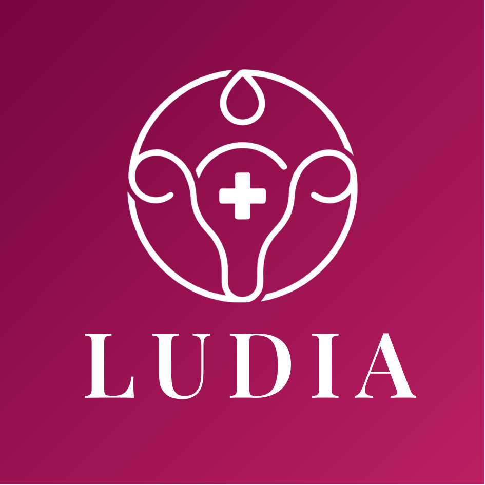
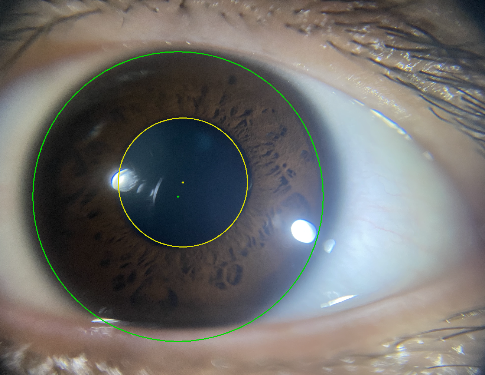
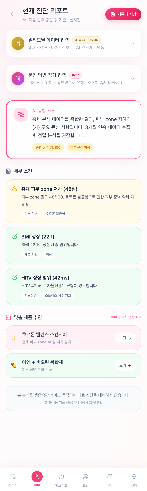
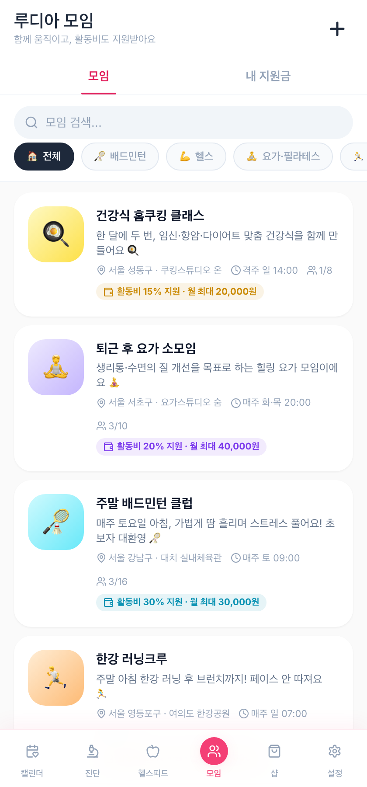

<title>LUDIA 스토리</title>
<style>
  :root{
    --wine-900:#3E0A20;
    --wine-700:#7A1740;
    --wine-500:#9C1F52;
    --gold:#C9A45C;
    --gold-soft:#E3CFA0;
    --cream:#FBF6EC;
    --cream-panel:#FFFFFF;
    --ink:#241512;
    --ink-soft:#5A4A45;
    --muted:#8A7972;
    --blush:#F5DCE6;
    --blush-line:#E9BCD1;
    --line-onlight:#E7DCCE;
    --line-ondark:rgba(255,255,255,0.16);
    --display:'Noto Sans KR','Archivo Black',sans-serif;
    --latin-display:'Archivo Black','Noto Sans KR',sans-serif;
    --sans:'IBM Plex Sans KR','IBM Plex Sans',system-ui,-apple-system,sans-serif;
    --mono:'IBM Plex Mono',ui-monospace,'SFMono-Regular',monospace;
  }
  html{scroll-behavior:smooth;}
  body{
    background:var(--cream);
    color:var(--ink);
    font-family:var(--sans);
    line-height:1.65;
    -webkit-font-smoothing:antialiased;
  }
  *{box-sizing:border-box;}
  h1,h2,h3{font-family:var(--display); font-weight:900; color:var(--ink); text-wrap:balance; margin:0;}
  p{margin:0;}
  a{color:inherit;}
  .wrap{max-width:900px; margin:0 auto; padding-inline:22px;}
  .eyebrow{
    font-family:var(--mono); font-size:11.5px; letter-spacing:.16em; text-transform:uppercase;
    font-weight:500;
  }
  .eyebrow.on-light{ color:var(--wine-500); }
  .eyebrow.on-dark{ color:var(--gold); }
  .rule{ width:38px; height:2px; margin-top:10px; }
  .rule.on-light{ background:var(--wine-500); }
  .rule.on-dark{ background:var(--gold); }

  /* ---------- nav ---------- */
  .nav{
    position:sticky; top:env(safe-area-inset-top,0px); z-index:40;
    background:rgba(251,246,236,0.9);
    backdrop-filter:blur(8px);
    border-bottom:1px solid var(--line-onlight);
  }
  .nav-inner{
    max-width:900px; margin:0 auto; padding:12px 22px;
    display:flex; align-items:center; gap:16px; overflow-x:auto;
    scrollbar-width:none;
  }
  .nav-inner::-webkit-scrollbar{display:none;}
  .nav-brand{ display:flex; align-items:center; gap:8px; padding-right:8px; border-right:1px solid var(--line-onlight); white-space:nowrap; }
  .nav-brand img{ width:20px; height:20px; border-radius:6px; }
  .nav-brand span{ font-family:var(--latin-display); font-size:13px; color:var(--wine-700); letter-spacing:.02em; }
  .nav-links{display:flex; gap:16px; white-space:nowrap;}
  .nav-links a{ font-size:12px; color:var(--muted); text-decoration:none; font-weight:600; padding:4px 2px; border-bottom:1px solid transparent; }
  .nav-links a:hover{ color:var(--wine-500); border-bottom-color:var(--wine-500); }

  /* ---------- hero ---------- */
  .hero{
    position:relative; overflow:hidden; color:#fff;
    background:
      radial-gradient(ellipse 640px 480px at 88% -6%, #B23A67, transparent 60%),
      linear-gradient(160deg, var(--wine-500), var(--wine-900) 75%);
  }
  .hero-inner{ max-width:900px; margin:0 auto; padding:64px 22px 52px; position:relative; }
  .ring{ position:absolute; right:-100px; top:-80px; width:360px; height:360px; opacity:.35; pointer-events:none; }
  .hero-badge{ display:flex; align-items:center; gap:15px; margin-bottom:30px; }
  .hero-badge img{ width:58px; height:58px; border-radius:14px; box-shadow:0 6px 20px rgba(0,0,0,0.35); }
  .hero-badge .name{ font-family:var(--latin-display); font-size:20px; letter-spacing:.05em; color:#fff; }
  .hero h1{
    font-family:var(--latin-display); color:#F7EFE3; font-weight:400;
    font-size:clamp(52px,12vw,104px); line-height:.92; letter-spacing:-.01em;
  }
  .hero .kr-sub{
    font-family:var(--display); font-weight:900; font-size:clamp(19px,3vw,24px);
    color:#fff; margin-top:16px;
  }
  .hero .greek{ font-family:var(--mono); font-size:12px; letter-spacing:.1em; color:var(--gold-soft); margin-top:6px; }
  .hero .quote{
    margin-top:30px; max-width:44ch; font-family:var(--display); font-weight:700;
    font-size:clamp(15px,2.6vw,25px); line-height:1.5; color:#fff;
    border-left:2px solid var(--gold); padding-left:16px;
  }
  .hero .tagline{ margin-top:22px; font-size:13.5px; color:rgba(255,255,255,0.72); max-width:48ch; }

  /* ---------- sections ---------- */
  section{ padding:60px 0; }
  .on-light{ background:var(--cream); color:var(--ink); }
  .on-dark{ background:linear-gradient(175deg, var(--wine-700), var(--wine-900)); color:#fff; }
  .sec-head{ margin-bottom:30px; }
  .sec-head h2{ font-size:clamp(23px,3.6vw,32px); margin-top:10px; }
  .on-dark .sec-head h2{ color:#fff; }
  .lede{ font-size:15px; max-width:64ch; margin-bottom:8px; }
  .on-light .lede{ color:var(--ink-soft); }
  .on-dark .lede{ color:rgba(255,255,255,0.82); }

  .story-body{ display:flex; flex-direction:column; gap:16px; max-width:62ch; font-size:15px; }
  .on-light .story-body{ color:var(--ink-soft); }
  .on-dark .story-body{ color:rgba(255,255,255,0.85); }

  .pullquote{
    margin-top:26px; padding:18px 20px; border-radius:2px;
    font-family:var(--display); font-weight:900; font-size:17px; line-height:1.5;
  }
  .on-light .pullquote{ background:var(--blush); color:var(--wine-700); border-left:3px solid var(--wine-500); }
  .on-dark .pullquote{ background:rgba(255,255,255,0.08); color:var(--gold-soft); border-left:3px solid var(--gold); }

  /* promise cards */
  .axis-list{ display:flex; flex-direction:column; margin-top:30px; border-top:1px solid var(--line-ondark); }
  .axis-row{
    display:grid; grid-template-columns:36px 200px 1fr; gap:14px; align-items:baseline;
    padding:13px 0; border-bottom:1px solid var(--line-ondark);
  }
  .axis-num{ font-family:var(--mono); color:var(--gold); font-size:13px; font-weight:700; }
  .axis-row b{ font-family:var(--display); font-weight:800; font-size:14.5px; color:#fff; }
  .axis-row span{ font-size:13px; color:rgba(255,255,255,0.75); }
  .axis-note{ margin-top:18px; font-size:13px; font-weight:600; color:var(--gold-soft); }

  .promise-grid{ display:grid; grid-template-columns:repeat(3,1fr); gap:14px; margin-top:30px; }
  .promise-card{ background:#fff; border-radius:2px; padding:22px 20px; border-top:3px solid var(--gold); }
  .promise-num{ font-family:var(--mono); font-size:24px; font-weight:600; color:var(--blush-line); }
  .promise-card .k{ font-family:var(--mono); font-size:10.5px; letter-spacing:.12em; color:var(--gold); font-weight:600; margin-top:10px; display:block; }
  .promise-card h3{ font-family:var(--display); font-weight:900; font-size:16px; color:var(--wine-700); margin-top:6px; }
  .promise-card p{ font-size:13px; color:var(--ink-soft); margin-top:8px; line-height:1.55; }

  .iris-note{
    margin-top:36px; display:grid; grid-template-columns:270px 1fr; gap:22px; align-items:start;
    background:rgba(255,255,255,0.06); padding:20px; border-radius:2px; border:1px solid var(--line-ondark);
  }
  .iris-note svg{ width:52px; height:52px; flex-shrink:0; }
  .iris-note p{ font-size:13.5px; color:rgba(255,255,255,0.8); }
  .iris-note .k{ font-family:var(--mono); font-size:10.5px; letter-spacing:.1em; color:var(--gold); font-weight:600; display:block; margin-bottom:6px; }
  .iris-photo{ border-radius:8px; overflow:hidden; border:1px solid rgba(255,255,255,0.14); }
  .iris-photo img{ width:100%; display:block; aspect-ratio:4/3; object-fit:cover; }
  .iris-photo-cap{ display:block; font-family:var(--mono); font-size:10px; color:rgba(255,255,255,0.55); margin-top:8px; line-height:1.5; }
  .iris-strip{ margin-top:16px; }
  .iris-strip img{ width:100%; display:block; border-radius:4px; border:1px solid rgba(255,255,255,0.14); }
  .iris-strip-cap{ display:block; font-family:var(--mono); font-size:10px; color:rgba(255,255,255,0.5); margin-top:6px; }

  .epi-block{ margin-top:44px; padding-top:36px; border-top:1px solid var(--line-ondark); }
  .epi-title{ font-family:var(--display); font-weight:900; font-size:19px; color:#fff; margin-bottom:16px; }
  .epi-qa{
    background:rgba(255,255,255,0.07); border-left:2px solid var(--gold); padding:14px 18px;
    border-radius:2px; margin-bottom:16px;
  }
  .epi-qa .q{ font-size:13px; color:rgba(255,255,255,0.6); }
  .epi-qa .a{ font-family:var(--display); font-weight:700; font-size:15.5px; color:var(--gold-soft); margin-top:5px; }
  .epi-desc{ font-size:13.5px; color:rgba(255,255,255,0.8); line-height:1.65; margin-bottom:20px; }
  .epi-grid{ display:grid; grid-template-columns:1fr 1fr; gap:14px; }
  .epi-card{ padding:18px 20px; border-radius:4px; }
  .epi-card.on{ background:rgba(239,68,68,0.12); border:1px solid rgba(239,68,68,0.32); }
  .epi-card.off{ background:rgba(34,197,94,0.12); border:1px solid rgba(34,197,94,0.32); }
  .epi-card .tag{ font-family:var(--display); font-weight:800; font-size:13.5px; display:block; }
  .epi-card.on .tag{ color:#fca5a5; }
  .epi-card.off .tag{ color:#86efac; }
  .epi-card p{ font-size:12.5px; color:rgba(255,255,255,0.78); margin-top:10px; line-height:1.55; }
  .epi-card .arrow{ font-weight:600; margin-top:8px; }
  .epi-card.on .arrow{ color:#fca5a5; }
  .epi-card.off .arrow{ color:#86efac; }
  .epi-closing{ margin-top:20px; font-size:14px; font-weight:600; color:var(--gold-soft); line-height:1.6; }

  .epi-sub{
    font-family:var(--display); font-weight:800; font-size:16px; color:#fff;
    margin-top:40px; margin-bottom:16px;
  }
  .epi-en{ font-family:var(--mono); font-size:10.5px; color:var(--gold); font-weight:500; letter-spacing:.02em; }
  .axis-row .epi-en{ display:inline-block; margin-top:2px; }

  .cond-grid{ display:grid; grid-template-columns:1fr 1fr; gap:14px; }
  .cond-card{
    background:rgba(255,255,255,0.06); border:1px solid var(--line-ondark); border-radius:4px;
    padding:18px 20px;
  }
  .cond-card b{ font-family:var(--display); font-weight:800; font-size:14.5px; color:#fff; display:block; }
  .cond-card .epi-en{ display:block; margin-top:3px; margin-bottom:10px; }
  .cond-mech{ font-size:12.5px; color:rgba(255,255,255,0.78); line-height:1.55; margin-bottom:10px; }
  .sw-on, .sw-off{ font-size:12px; line-height:1.5; margin-top:6px; }
  .sw-on{ color:#fca5a5; }
  .sw-off{ color:#86efac; }

  .epi-summary-quote{
    margin-top:40px; padding:24px 26px; background:rgba(255,255,255,0.06);
    border-left:2px solid var(--gold); border-radius:2px;
  }
  .epi-summary-quote > p{ font-family:var(--display); font-weight:700; font-size:15px; color:#fff; line-height:1.6; }
  .epi-summary-quote ul{ list-style:none; margin:16px 0 0; padding:0; display:flex; flex-direction:column; gap:6px; }
  .epi-summary-quote li{ font-size:13px; color:rgba(255,255,255,0.8); }
  .epi-summary-quote li b{ color:var(--gold-soft); font-weight:700; }
  .epi-summary-close{ margin-top:16px; font-size:13.5px; font-weight:600; color:var(--gold-soft); }

  /* flow */
  .flow{ display:grid; grid-template-columns:repeat(4,1fr); gap:12px; margin-top:6px; }
  .flow-card{ background:#fff; border:1px solid var(--line-onlight); border-radius:2px; padding:18px 16px; position:relative; }
  .flow-card .step{ font-family:var(--mono); font-size:10.5px; color:var(--wine-500); letter-spacing:.08em; font-weight:600; }
  .flow-card h3{ font-family:var(--display); font-weight:800; font-size:14px; margin-top:8px; color:var(--ink); }
  .flow-card p{ font-size:12.5px; color:var(--muted); margin-top:8px; line-height:1.5; }

  .app-overview{ display:grid; grid-template-columns:1fr auto; gap:28px; align-items:start; margin-top:6px; }
  .flow-col{ display:flex; flex-direction:column; gap:12px; }
  .flow-col .flow-card{ padding:16px; }

  .app-shots{ display:flex; justify-content:center; align-items:flex-start; gap:20px; flex-wrap:wrap; }
  .app-shot{ width:220px; flex:0 0 auto; }
  .app-shot .frame{
    width:220px; aspect-ratio:9/16; border-radius:18px; overflow:hidden;
    border:1px solid var(--line-onlight); box-shadow:0 12px 30px rgba(158,18,57,0.12);
  }
  .app-shot img{ width:100%; height:100%; object-fit:cover; object-position:top; display:block; }
  .app-shot span{ display:block; text-align:center; margin-top:8px; font-family:var(--mono); font-size:11px; font-weight:600; color:var(--muted); }

  /* care card grid */
  .care-grid{ display:grid; grid-template-columns:repeat(3,1fr); gap:1px; background:var(--line-onlight); border:1px solid var(--line-onlight); margin-top:16px; }
  .care-cell{ background:#fff; padding:14px 15px; }
  .care-cell .n{ font-family:var(--mono); font-size:10px; color:var(--gold); font-weight:700; }
  .care-cell b{ display:block; font-family:var(--display); font-weight:800; font-size:13px; color:var(--ink); margin-top:4px; }
  .care-cell span{ font-size:11.5px; color:var(--muted); display:block; margin-top:4px; line-height:1.5; }

  /* hair type deep-dive */
  .deepdive{ margin-top:44px; background:#fff; border:1px solid var(--line-onlight); border-radius:2px; padding:26px; }
  .deepdive-head{ display:flex; align-items:baseline; justify-content:space-between; gap:12px; flex-wrap:wrap; margin-bottom:18px; }
  .deepdive-head h3{ font-family:var(--display); font-weight:900; font-size:18px; color:var(--wine-700); }
  .deepdive-head span{ font-family:var(--mono); font-size:11px; color:var(--muted); }
  .type-grid{ display:grid; grid-template-columns:repeat(3,1fr); gap:12px; }
  .type-card{ border:1px solid var(--line-onlight); border-radius:2px; padding:14px; }
  .type-dot{ width:9px; height:9px; border-radius:50%; margin-bottom:8px; }
  .type-card b{ display:block; font-family:var(--display); font-weight:800; font-size:12.5px; color:var(--ink); line-height:1.4; }
  .type-card .sub{ font-size:10.5px; color:var(--gold); font-family:var(--mono); margin-top:4px; display:block; }
  .type-card p{ font-size:11.5px; color:var(--muted); margin-top:8px; line-height:1.55; }

  .extra-row{ display:grid; grid-template-columns:repeat(3,1fr); gap:14px; margin-top:36px; }
  .extra-cell{ border-left:2px solid var(--wine-500); padding-left:14px; }
  .extra-cell b{ display:block; font-family:var(--display); font-weight:800; font-size:14px; color:var(--ink); }
  .extra-cell span{ font-size:12.5px; color:var(--muted); display:block; margin-top:5px; line-height:1.55; }

  .community-block{ margin-top:44px; padding-top:36px; border-top:1px solid var(--line-onlight); }
  .community-title{ font-family:var(--display); font-weight:900; font-size:19px; color:var(--ink); margin-top:8px; }
  .meetup-grid{
    display:grid; grid-template-columns:repeat(5,1fr); gap:1px;
    background:var(--line-onlight); border:1px solid var(--line-onlight); border-radius:12px; overflow:hidden; margin-top:20px;
  }
  .meetup-cell{ background:#fff; padding:16px 10px; text-align:center; }
  .meetup-cell .emoji{ font-size:22px; display:block; margin-bottom:6px; }
  .meetup-cell b{ display:block; font-family:var(--display); font-weight:800; font-size:12.5px; color:var(--ink); }
  .meetup-cell span{ display:block; font-size:10px; color:var(--gold); font-family:var(--mono); margin-top:5px; line-height:1.4; }
  .community-note{
    margin-top:18px; font-size:12.5px; color:var(--ink-soft); background:var(--blush);
    padding:13px 16px; border-left:2px solid var(--wine-500); line-height:1.6;
  }

  .hobby-groups{ column-count:2; column-gap:32px; margin-top:20px; }
  .hobby-group{ break-inside:avoid; margin-bottom:16px; }
  .hobby-group h4{ font-family:var(--display); font-weight:800; font-size:13px; color:var(--ink); margin:0 0 8px; }
  .hobby-group h4 .en{ font-family:var(--mono); font-size:10px; font-weight:500; color:var(--gold); letter-spacing:.02em; margin-left:6px; }
  .hobby-chips{ display:flex; flex-wrap:wrap; gap:7px; }
  .hobby-chips .chip{
    font-family:var(--sans); font-size:11.5px; font-weight:500; color:var(--ink-soft);
    background:#fff; border:1px solid var(--line-onlight); padding:5px 12px; border-radius:100px;
    white-space:nowrap;
  }

  .commit-row{ display:flex; flex-wrap:wrap; gap:10px; margin-top:28px; }
  .commit-chip{
    font-family:var(--mono); font-size:11.5px; letter-spacing:.03em; color:var(--gold);
    border:1px solid rgba(201,164,92,0.45); padding:7px 14px; border-radius:100px;
  }

  /* footer */
  footer.hero{ padding-bottom:calc(52px + env(safe-area-inset-bottom,0px)); }
  .foot-inner{ max-width:900px; margin:0 auto; padding:56px 22px 0; text-align:center; position:relative; }
  .foot-inner img{ width:64px; height:64px; border-radius:16px; margin-bottom:18px; box-shadow:0 10px 30px rgba(0,0,0,0.35); }
  .foot-word{ font-family:var(--latin-display); font-weight:400; font-size:clamp(34px,7vw,52px); color:#F7EFE3; }
  .foot-inner .kr{ font-family:var(--display); font-weight:900; font-size:13px; letter-spacing:.2em; color:rgba(255,255,255,0.7); margin-top:10px; }
  .foot-line{ width:44px; height:1px; background:var(--gold); margin:22px auto; }
  .foot-inner .closing{ font-family:var(--display); font-weight:700; font-size:15px; color:var(--gold-soft); }
  .foot-inner .sub{ font-size:12px; color:rgba(255,255,255,0.5); margin-top:10px; }

  /* ---------- full care guide ---------- */
  .guide-intro{ margin-bottom:8px; }
  .cat-acc{ border:1px solid var(--line-onlight); background:#fff; margin-top:14px; border-radius:2px; overflow:hidden; }
  .cat-acc summary{
    list-style:none; cursor:pointer; display:flex; align-items:center; gap:14px; padding:18px 20px;
  }
  .cat-acc summary::-webkit-details-marker{ display:none; }
  .cat-num-badge{
    font-family:var(--mono); font-size:11px; font-weight:700; color:#fff; background:var(--wine-700);
    width:28px; height:28px; border-radius:50%; display:flex; align-items:center; justify-content:center; flex-shrink:0;
  }
  .cat-title{ font-family:var(--display); font-weight:800; font-size:15px; color:var(--ink); flex:1; }
  .cat-count{ font-family:var(--mono); font-size:11px; color:var(--muted); white-space:nowrap; }
  .cat-caret{ font-family:var(--mono); font-size:20px; color:var(--wine-500); transition:transform .2s; flex-shrink:0; }
  .cat-acc[open] .cat-caret{ transform:rotate(45deg); }
  .cat-body{ padding:0 20px 26px; border-top:1px solid var(--line-onlight); }
  .cat-intro{ font-size:13px; color:var(--ink-soft); padding-top:18px; margin:0 0 6px; line-height:1.65; }

  .deep-type{ padding:22px 0; border-top:1px solid var(--line-onlight); }
  .deep-type:first-of-type{ border-top:none; }
  .deep-type-head{ display:flex; align-items:baseline; gap:12px; margin-bottom:12px; }
  .dt-num{ font-family:var(--mono); font-size:20px; color:var(--blush-line); font-weight:700; }
  .deep-type-head b{ font-family:var(--display); font-weight:800; font-size:14.5px; color:var(--wine-700); line-height:1.4; }
  .dt-sub{ font-family:var(--mono); font-size:10.5px; color:var(--muted); display:block; margin-top:3px; }
  .deep-type-grid{ display:grid; grid-template-columns:1fr 1fr; gap:22px; }
  .dt-label{ font-family:var(--mono); font-size:10px; letter-spacing:.1em; color:var(--gold); text-transform:uppercase; font-weight:700; }
  .dt-col p{ font-size:12.5px; color:var(--ink-soft); line-height:1.62; margin-top:9px; }
  .dt-col p b{ font-family:var(--sans); font-weight:700; color:var(--ink); }
  .dt-mech{ background:var(--blush); padding:11px 13px; border-left:2px solid var(--wine-500); margin-top:11px !important; color:var(--wine-700) !important; font-weight:500; }
  .dt-mech b{ color:var(--wine-700) !important; }

  .service-example{ margin-top:22px; background:var(--wine-900); color:#fff; padding:18px 20px; border-radius:2px; }
  .service-example .dt-label{ color:var(--gold); }
  .service-example p{ font-size:12.5px; color:rgba(255,255,255,0.85); margin-top:9px; line-height:1.62; }
  .service-example p b{ color:#fff; }
  .service-example p i{ font-style:normal; color:var(--gold-soft); }

  @media (max-width:760px){
    .promise-grid, .flow, .care-grid, .type-grid, .extra-row, .deep-type-grid, .iris-note, .epi-grid, .cond-grid{ grid-template-columns:1fr; }
    .app-overview{ grid-template-columns:1fr; }
    .app-shot{ width:160px; }
    .app-shot .frame{ width:160px; }
    .meetup-grid{ grid-template-columns:repeat(2,1fr); }
    .hobby-groups{ column-count:1; }
    .axis-row{ grid-template-columns:1fr; gap:4px; }
    .ring{ width:220px; height:220px; right:-60px; top:-40px; }
  }
  @media (min-width:761px) and (max-width:900px){
    .care-grid{ grid-template-columns:repeat(2,1fr); }
  }
</style>

<link rel="stylesheet" href="https://fonts.googleapis.com/css2?family=Archivo+Black&family=Noto+Sans+KR:wght@400;500;700;900&family=IBM+Plex+Sans+KR:wght@400;500;600;700&family=IBM+Plex+Mono:wght@400;500;600&display=swap">

<nav class="nav">
  <div class="nav-inner">
    <div class="nav-brand"><span>LUDIA</span></div>
    <div class="nav-links">
      <a href="#start">시작</a>
      <a href="#philosophy">철학</a>
      <a href="#epigenetics-detail">후성유전학</a>
      <a href="#app">앱 기능</a>
      <a href="#guide">케어 가이드</a>
      <a href="#vision">지향점</a>
    </div>
  </div>
</nav>

<header class="hero">
  <div class="hero-inner">
    <svg class="ring" viewBox="0 0 200 200" aria-hidden="true">
      <circle cx="100" cy="100" r="96" fill="none" stroke="#E3CFA0" stroke-opacity="0.35" stroke-width="1"/>
      <circle cx="100" cy="100" r="74" fill="none" stroke="#E3CFA0" stroke-opacity="0.3" stroke-width="1"/>
      <circle cx="100" cy="100" r="50" fill="none" stroke="#E3CFA0" stroke-opacity="0.28" stroke-width="1"/>
      <circle cx="100" cy="100" r="24" fill="#E3CFA0" fill-opacity="0.12"/>
    </svg>

    <div class="hero-badge"><span class="name">LUDIA INTEGRATIVE HEALTH</span></div>

    <span class="eyebrow on-dark">LUDIA STORY · 브랜드 이야기</span>
    <h1>LUDIA</h1>

    <p class="quote">&ldquo;몸은 증상의 합이 아니라, 하나의 살아있는 회로입니다.&rdquo;</p>
    <p class="tagline">
      제가 왜 LUDIA를 만들게 되었는지, 어떤 생각으로 이 서비스를 설계했는지,
      그리고 지금 앱에서 무엇을 할 수 있는지를 이 페이지에 담았습니다.
    </p>
  </div>
</header>

<main>

  <section id="start" class="on-light">
    <div class="wrap">
      <div class="sec-head">
        <span class="eyebrow on-light">01 · WHY I STARTED</span>
        <h2>&ldquo;건강 관리의 시작은, 내 몸을 제대로 이해하는 것입니다&rdquo;</h2>
      </div>
      <div class="story-body">
        <p>
          의학을 전공하며 사람의 생리 메커니즘과 자율신경, 대사 과정을 연구하면서 수많은 신체 데이터를
          접했습니다. 그리고 한 가지 안타까운 반복을 목격했습니다. 수많은 사람들이 건강을 위해 노력하지만,
          정작 자신의 몸이 보내는 신호와 진짜 원인은 모른 채 무작정 몸을 맞추려 한다는 것이었습니다.
        </p>
        <p>
          이유 없이 머리가 빠지거나 피부 질환이 생기고, 원인을 알 수 없는 소화불량이나 생리통, 만성 피로에
          시달릴 때 우리는 당장 눈앞의 증상만 끄기 쉬운 솔루션을 찾습니다. 하지만 자율신경, 장내 환경,
          호르몬 등 사람마다 불균형이 시작된 지점은 전부 다릅니다. 남들이 다 하는 식단이나 운동 기법이
          나에게는 오답이 될 수 있는 이유입니다. 나에게 맞지 않는 케어는 결코 지속될 수 없습니다.
        </p>
        <p>
          저는 사람들이 막연한 오답 노트를 반복하지 않도록 돕고 싶었습니다. 나에게 찾아온 증상의 원인을
          먼저 다각도로 이해하고, 그에 맞춰 나만의 식단과 운동, 일상 케어를 스마트하게 해나갈 수 있는
          <b>&lsquo;내 몸 이해의 길잡이&rsquo;</b>가 되어주고 싶었습니다.
        </p>
        <p>
          LUDIA는 이 마음에서 출발했습니다. 실질적인 도움을 주는 도구를 만들기 위해 직접 개발 환경을
          구축하고 프로토타입 앱을 하나씩 완성해 가고 있습니다.
        </p>
      </div>
      <div class="pullquote">&ldquo;진짜 변화는 내 몸을 바르게 이해하는 것에서 시작됩니다. 이제 나에게 딱 맞는 방법으로 제대로 된 케어를 시작해보세요.&rdquo;</div>
    </div>
  </section>

  <section id="philosophy" class="on-dark">
    <div class="wrap">
      <div class="sec-head">
        <span class="eyebrow on-dark">02 · WHAT LUDIA BELIEVES</span>
        <h2>몸은 증상의 합이 아니라, 하나의 회로입니다</h2>
      </div>
      <div class="story-body">
        <p>
          LUDIA는 그리스어로 재생(Regeneration), 치유(Healing), 빛나는 통찰(Luminous Insight)을
          뜻합니다. 저는 몸을 따로따로 고쳐야 할 증상의 목록이 아니라, 하나의 축이 무너지면 전체가
          연쇄적으로 흔들리는 유기적인 회로라고 생각합니다. 그래서 LUDIA는 겉으로 드러난 증상 하나하나를
          쫓기보다, 그 증상들을 연결하는 첫 번째 원인을 함께 찾아가려 합니다.
        </p>
      </div>

      <div class="axis-list">
        <div class="axis-row"><span class="axis-num">01</span><b>신경계 & 자율조절 축</b><span>무너지면 불안·불면·브레인 포그로 이어져요.</span></div>
        <div class="axis-row"><span class="axis-num">02</span><b>에너지 & 대사 축</b><span>무너지면 만성 피로·체중 증가·대사 저하로 이어져요.</span></div>
        <div class="axis-row"><span class="axis-num">03</span><b>순환 & 혈류 축</b><span>무너지면 부종·냉증·두피와 피부 트러블로 이어져요.</span></div>
        <div class="axis-row"><span class="axis-num">04</span><b>점막 & 장 환경 축</b><span>무너지면 소화불량·장누수·만성 염증으로 이어져요.</span></div>
        <div class="axis-row"><span class="axis-num">05</span><b>해독 & 배출 축</b><span>무너지면 피부 트러블·호르몬 불균형·염증 반응으로 이어져요.</span></div>
      </div>
      <p class="axis-note">
        LUDIA의 12개 케어 카테고리는 결국 이 다섯 가지 축 중 어디서, 어떻게 불균형이 시작됐는지를
        각자의 방식으로 풀어낸 것입니다.
      </p>

      <div class="promise-grid">
        <div class="promise-card">
          <div class="promise-num">01</div>
          <span class="k">WHOLENESS</span>
          <h3>전인적 치유</h3>
          <p>하나의 증상만 보지 않고 신체 신호, 자율신경, 생활습관을 함께 읽어요.</p>
        </div>
        <div class="promise-card">
          <div class="promise-num">02</div>
          <span class="k">PREDICTABILITY</span>
          <h3>예측 가능한 관리</h3>
          <p>비침습 측정으로 병원에 가기 전, 내 몸이 보내는 신호를 먼저 확인해요.</p>
        </div>
        <div class="promise-card">
          <div class="promise-num">03</div>
          <span class="k">PRECISION</span>
          <h3>정밀한 맞춤</h3>
          <p>같은 탈모, 같은 다이어트도 사람마다 다른 원인으로 나누어 접근해요.</p>
        </div>
      </div>

      <div class="iris-note">
        <div class="iris-photo">
          
          <span class="iris-photo-cap">실제 스캔 화면 &mdash; 동공·홍채 경계를 자동으로 감지해요.</span>
        </div>
        <div>
          <span class="k">WHY THE IRIS</span>
          <p>
            홍채는 자율신경계가 말초 조직과 가장 가깝게 맞닿는 신체 부위입니다. LUDIA는 이 홍채의
            표현형 데이터에 문진·생활습관 데이터는 물론, 현재 복용 중인 약, 과거 진단명, 과거 수술 이력까지
            함께 읽어 들여요. 이 모든 지표가 종합적으로 작용해, 지금 몸 안에서 일어나고 있는 변화를
            하나의 원인으로 좁혀주는 결과값이 만들어집니다.
          </p>
          <div class="iris-strip">
            
            <span class="iris-strip-cap">감지된 홍채를 펼쳐 조직의 결과 패턴을 분석해요.</span>
          </div>
        </div>
      </div>
    </div>
  </section>

  <section id="epigenetics-detail" class="on-dark">
    <div class="wrap">
      <div class="sec-head">
        <span class="eyebrow on-dark">02 · EPIGENETICS &middot; THE SCIENCE</span>
        <h2>DNA 배열을 넘어선 생물학적 스위치</h2>
        <p class="lede" style="margin-top:10px; color:rgba(255,255,255,0.82);">
          유전체(Genome)는 악보일 뿐, 연주(Epigenome)는 환경이 결정합니다.
        </p>
      </div>

      <div class="story-body">
        <p>
          인간의 DNA 순서(Genomic Sequence)는 태어날 때 결정되며 쉽게 변하지 않습니다. 하지만 DNA
          위에는 유전자 발현을 조절하는 &lsquo;후성유전학적 표지(Epigenetic Marks)&rsquo;가 존재합니다.
        </p>
        <p>
          식단, 자율신경계 밸런스, 대사 산물, 만성 스트레스와 같은 외부 환경 자극은 Cell-signaling
          경로를 통해 DNA 및 히스톤 단백질에 화학적 변형을 일으킵니다. 그 결과, 동일한 DNA를 가졌더라도
          특정 유전자가 활성화(On)되거나 침묵(Off)하게 됩니다.
        </p>
      </div>

      <h3 class="epi-sub">유전자 발현을 조절하는 3가지 핵심 메커니즘</h3>
      <div class="axis-list">
        <div class="axis-row">
          <span class="axis-num">01</span><b>DNA 메틸화<br/><span class="epi-en">DNA Methylation</span></b>
          <span>DNA 프로모터 부위에 메틸기(&ndash;CH&#8323;)가 결합하면 RNA 합성효소의 접근이 차단되어
          유전자 발현이 억제(OFF)돼요. 올바른 영양 공급과 대사 케어는 불필요하게 켜진 질병 관련 유전자
          메틸화를 유도해 스위치를 끌 수 있어요.</span>
        </div>
        <div class="axis-row">
          <span class="axis-num">02</span><b>히스톤 변형<br/><span class="epi-en">Histone Modification</span></b>
          <span>DNA가 감겨 있는 히스톤 단백질이 아세틸화(Acetylation)되면 응축된 구조가 풀리면서 유전자
          발현이 촉진(ON)돼요. 수면, 스트레스, 장내 미생물 대사산물(SCFA) 등이 히스톤 구조 변화에
          직접적인 영향을 미쳐요.</span>
        </div>
        <div class="axis-row">
          <span class="axis-num">03</span><b>비번역 RNA 조절<br/><span class="epi-en">Non-coding RNA / microRNA</span></b>
          <span>단백질을 합성하지 않는 microRNA는 전사 후 단계에서 타깃 mRNA의 분해를 유도해 세포 내
          염증 반응이나 신진대사 유전자 발현을 미세 조정해요.</span>
        </div>
      </div>

      <h3 class="epi-sub">후성유전학적 가역성(Reversibility)과 맞춤형 케어의 필요성</h3>
      <div class="epi-qa">
        <p class="a" style="margin-top:0;">&ldquo;유전자 변이는 되돌릴 수 없지만, 후성유전학적 변형은 가역적(Reversible)입니다.&rdquo;</p>
      </div>
      <div class="epi-grid">
        <div class="epi-card on">
          <span class="tag">&#128308; 질병 스위치의 켜짐 (Pathological ON)</span>
          <p>가족력이 없더라도, 나에게 맞지 않는 식단과 만성 자율신경 불균형이 지속되면 대사·염증 관련
          유전자 스위치가 켜져 이유 없는 탈모, 대사증후군, 만성 피부 질환으로 이어져요.</p>
        </div>
        <div class="epi-card off">
          <span class="tag">&#128994; 질병 스위치의 꺼짐 (Epigenetic OFF)</span>
          <p>고위험 유전인자를 보유했더라도, 내 신체 메커니즘에 최적화된 맞춤형 식단·운동·라이프스타일
          Intervention을 제공하면 켜져 있던 질병 유전자 스위치를 다시 끌(OFF) 수 있어요.</p>
        </div>
      </div>
      <p class="epi-closing">
        LUDIA는 단편적인 증상 완화를 넘어, 후성유전학적 스위치를 긍정적인 방향으로 조절(Epigenetic
        Modulation)할 수 있도록 개인의 신체 메커니즘을 다각도로 분석합니다. 나에게 딱 맞는 케어를 만날
        때, 타고난 유전적 한계를 넘어 지속 가능한 건강을 만들어갈 수 있습니다.
      </p>

      <h3 class="epi-sub">몸 곳곳에서 일어나는 스위치 작용 &mdash; 4가지 사례</h3>
      <div class="cond-grid">
        <div class="cond-card">
          <b>비만 및 대사증후군</b><span class="epi-en">Obesity & Metabolic Syndrome</span>
          <p class="cond-mech">비만 유전자(FTO, LEP 등)는 식탐이나 지방 축적을 유도하지만, 식단 구성과
          수면, 자율신경계 밸런스에 따라 지방 소모 유전자(UCP1)의 아세틸화나 지방 합성 유전자의 DNA
          메틸화 수준이 완전히 달라져요.</p>
          <p class="sw-on">&#128308; ON &mdash; 정제당 섭취와 만성 수면 부족이 지속되면 FTO 유전자 스위치가 켜져 포만감 신호가 차단되고, 같은 양을 먹어도 지방으로 빠르게 축적돼요.</p>
          <p class="sw-off">&#128994; OFF &mdash; 맞춤형 영양소(단쇄지방산 등)와 대사 환경을 맞춰주면 지방 분해 유전자 스위치가 활성화되어 체질적으로 살이 잘 빠지는 상태가 돼요.</p>
        </div>
        <div class="cond-card">
          <b>만성 피부 질환</b><span class="epi-en">Skin Disorders</span>
          <p class="cond-mech">피부 장벽 유전자(Filaggrin)와 면역 염증 유전자(TNF-&alpha;, IL-17)는 장내
          미생물 대사산물과 자율신경 균형에 매우 민감하게 반응해요.</p>
          <p class="sw-on">&#128308; ON &mdash; 장내 환경 악화로 microRNA 조절이 무너지며 염증성 사이토카인 유전자 스위치가 과도하게 켜져 이유 없는 피부 트러블·아토피 재발로 이어져요.</p>
          <p class="sw-off">&#128994; OFF &mdash; 장&ndash;피부 축(Gut-Skin Axis)을 개선하고 대사 환경을 잡아주면 염증 유전자 표지가 억제(메틸화)되어 피부 재생·장벽 유지 유전자가 작동해요.</p>
        </div>
        <div class="cond-card">
          <b>만성 피로 및 자율신경 불균형</b><span class="epi-en">Chronic Fatigue & Autonomic Dysfunction</span>
          <p class="cond-mech">미토콘드리아 에너지 생성 유전자와 코르티솔(스트레스 호르몬) 수용체 유전자(NR3C1)의
          후성유전학적 변형에 의해 결정돼요.</p>
          <p class="sw-on">&#128308; ON &mdash; 만성 스트레스가 지속되면 스트레스 수용체 유전자의 메틸화가 변하면서 피로 회복 유전자 스위치가 꺼져요. 아무리 쉬어도 피로가 풀리지 않는 이유예요.</p>
          <p class="sw-off">&#128994; OFF &mdash; 자율신경계 밸런스 케어로 히스톤 구조를 안정시키면 미토콘드리아 활성화 유전자가 다시 켜져 일상적인 에너지 대사가 회복돼요.</p>
        </div>
        <div class="cond-card">
          <b>생리통 · PCOS · 여성 질환</b><span class="epi-en">Gynecological Health</span>
          <p class="cond-mech">에스트로겐 수용체(ESR1/ESR2) 유전자의 메틸화 비율에 따라 호르몬 민감도와
          자궁 내막 염증 반응이 크게 달라져요.</p>
          <p class="sw-on">&#128308; ON &mdash; 내분비 교란 물질과 영양 불균형이 가해지면 에스트로겐 수용체 발현 스위치가 이상 동작해 원인 모를 극심한 생리통·생리 불순·자궁 내막 염증을 유발해요.</p>
          <p class="sw-off">&#128994; OFF &mdash; 호르몬 대사 경로를 바르게 잡아주면 과도한 호르몬 민감도 유전자가 억제(OFF)되어 규칙적이고 통증 없는 생리 주기를 되찾게 돼요.</p>
        </div>
      </div>

      <h3 class="epi-sub">탈모 유전자, 후성유전학으로 다시 보기</h3>
      <p class="lede" style="color:rgba(255,255,255,0.82);">
        탈모 유전자를 가졌다고 해서 모두가 머리가 빠지는 것은 아닙니다. 안드로겐 수용체(AR) 유전자나
        모낭 축소 신호 물질(TGF-&beta;1)은 대표적인 후성유전학적 조절 대상이에요.
      </p>
      <div class="axis-list">
        <div class="axis-row">
          <span class="axis-num">01</span><b>안드로겐 수용체(AR) 유전자의 메틸화<br/><span class="epi-en">DNA Methylation</span></b>
          <span>모낭 세포의 AR이 남성호르몬(DHT)과 결합하는 것이 탈모의 핵심 요소 중 하나예요. AR 유전자
          프로모터 부위가 메틸화되면 수용체 발현이 억제(OFF)되어 DHT에 대한 모낭의 민감도가 떨어져요.
          탈모 유전자가 있어도 반응성이 줄어들어 모낭 축소가 둔화돼요.</span>
        </div>
        <div class="axis-row">
          <span class="axis-num">02</span><b>microRNA를 통한 전사 후 조절<br/><span class="epi-en">Post-Transcriptional Regulation</span></b>
          <span>특정 microRNA는 모낭 성장 신호(Wnt/&beta;-catenin 경로)를 켜거나, 탈모 유도 인자(TGF-&beta;1,
          DKK-1 등)의 합성을 차단해요. 영양 불균형이나 염증성 자극이 심해지면 Wnt 신호를 억제하는
          microRNA가 활성화되어(ON) 모낭이 휴지기로 빠르게 진입해요.</span>
        </div>
        <div class="axis-row">
          <span class="axis-num">03</span><b>두피 미세혈류와 산화 스트레스<br/><span class="epi-en">Epigenetic Trigger</span></b>
          <span>만성 스트레스, 자율신경 불균형, 만성 염증, 영양 결핍은 모낭 세포 내 산화 스트레스(ROS)를
          유발해요. 이 산화 스트레스가 히스톤 단백질 구조를 변화시켜, 자고 있던 탈모 관련 염증성·사멸
          유전자 스위치를 직접 켜는(ON) 핵심 트리거가 돼요.</span>
        </div>
      </div>
      <p class="epi-closing">
        맞춤형 영양 케어, 자율신경 밸런스, 두피 대사 환경 개선을 제공하면 안드로겐 수용체 발현이
        억제(메틸화)되고 모낭 재생 신호(Wnt 경로)가 정상화되어 유전적 위험성을 상당 부분 상쇄할 수
        있어요. 결국 탈모 역시 &lsquo;유전의 운명&rsquo;이 아니라 &lsquo;두피와 신체 환경의 조절&rsquo; 영역에 속합니다.
      </p>

      <div class="epi-summary-quote">
        <p>
          &ldquo;탈모, 비만, 만성 피부 질환, 이유 없는 피로와 생리통까지 &mdash; 이 모든 증상들의 공통점은
          &lsquo;타고난 유전자의 문제&rsquo;가 아니라 &lsquo;유전자 스위치가 켜진 환경&rsquo;에 있다는 것입니다.&rdquo;
        </p>
        <ul>
          <li><b>비만</b> &mdash; FTO 유전자가 있어도 대사 환경을 개선하면 지방 축적 스위치가 꺼져요.</li>
          <li><b>피부 질환</b> &mdash; 염증 유전자 스위치를 끄면 약에 의존하지 않는 피부 자생력이 켜져요.</li>
          <li><b>만성 피로</b> &mdash; 미토콘드리아 에너지 유전자 스위치를 켜면 아침이 달라져요.</li>
        </ul>
        <p class="epi-summary-close">
          LUDIA는 내 몸에 맞지 않는 습관으로 켜져 버린 질병 스위치들을 하나씩 꺼나갈 수 있도록 가장
          정확한 길을 제시합니다.
        </p>
      </div>
    </div>
  </section>

  <section id="epigenetics" class="on-dark">
    <div class="wrap">
      <div class="epi-block">
        <p class="epi-title">&#129516; 유전자는 운명이 아닌 &lsquo;스위치&rsquo;입니다</p>
        <div class="epi-qa">
          <p class="q">Q. 가족력이 있으면 무조건 그 병에 걸릴까요?</p>
          <p class="a">A. 아니요, 유전자의 스위치를 끄면 됩니다.</p>
        </div>
        <p class="epi-desc">
          최신 후성유전학(Epigenetics) 연구에 따르면, 유전자는 고정된 결과가 아니라 생활 환경에 따라
          켜지고 꺼지는 스위치와 같습니다. 타고난 DNA 자체는 바꿀 수 없지만, 그 유전자가 작동하는
          스위치는 우리의 환경과 관리 방법에 따라 얼마든지 달라집니다.
        </p>
        <div class="epi-grid">
          <div class="epi-card on">
            <span class="tag">&#128308; 스위치가 켜지는(ON) 이유</span>
            <p>내 몸에 맞지 않는 식단, 만성 스트레스, 수면 부족, 원인 모를 장내 환경 불균형.</p>
            <p class="arrow">&rarr; 건강하게 태어났어도 탈모, 비만, 성인병 발생 가능성이 급증해요.</p>
          </div>
          <div class="epi-card off">
            <span class="tag">&#128994; 스위치를 끄는(OFF) 방법</span>
            <p>내 신체 메커니즘 이해, 나에게 맞는 식단과 운동, 자율신경 밸런스 케어.</p>
            <p class="arrow">&rarr; 안 좋은 가족력이 있어도 질병의 발현을 효과적으로 예방해요.</p>
          </div>
        </div>
        <p class="epi-closing">
          LUDIA는 여러분의 몸에 맞는 정확한 관리법을 찾아, 안 좋은 유전자 스위치는 끄고 건강함의
          스위치를 켤 수 있도록 돕습니다.
        </p>
      </div>
    </div>
  </section>

  <section id="app" class="on-light">
    <div class="wrap">
      <div class="sec-head">
        <span class="eyebrow on-light">03 · WHAT LUDIA DOES</span>
        <h2>LUDIA 앱에서는 이런 것들을 할 수 있어요</h2>
        <p class="lede" style="margin-top:10px;">생체 데이터를 읽는 진단부터, 원인에 맞는 케어와 커뮤니티 연결까지 &mdash; 하나의 흐름으로 이어집니다.</p>
      </div>

      <div class="app-overview">
        <div class="flow flow-col">
          <div class="flow-card">
            <span class="step">STEP 1 · 측정</span>
            <h3>4가지 생체 신호 스캔</h3>
            <p>홍채 3D · EDA · HRV · BMI를 기기로 스캔하거나, 기기 없이 직접 문진으로 입력할 수 있어요.</p>
          </div>
          <div class="flow-card">
            <span class="step">STEP 2 · 진단</span>
            <h3>진단 리포트 & 기록</h3>
            <p>멀티모달 데이터를 종합한 리포트를 받고, 날짜·연도별로 나의 진단 기록을 쌓아가요.</p>
          </div>
          <div class="flow-card">
            <span class="step">STEP 3 · 케어</span>
            <h3>12종 케어카드</h3>
            <p>탈모, 체중, 호르몬 등 나에게 필요한 영역의 원인별 맞춤 가이드를 확인해요.</p>
          </div>
          <div class="flow-card">
            <span class="step">STEP 4 · 연결</span>
            <h3>커뮤니티 & 제품 연계</h3>
            <p>같은 원인 유형의 웰니스 모임에 연결되고, 맞춤 제품도 함께 추천받아요.</p>
          </div>
        </div>

        <div class="app-shots">
          <div class="app-shot"><div class="frame"></div><span>진단 리포트</span></div>
          <div class="app-shot"><div class="frame"></div><span>모임</span></div>
        </div>
      </div>

      <div class="care-grid">
        <div class="care-cell"><span class="n">01</span><b>탈모 & 두피 케어</b><span>두피 열 · 모세혈관 수축 · 피지 대사 정체</span></div>
        <div class="care-cell"><span class="n">02</span><b>체중 & 대사 케어</b><span>인슐린 저항성 · 부종 체증 · 대사 저하형 다이어트</span></div>
        <div class="care-cell"><span class="n">03</span><b>남성 웰니스 & 벌크업</b><span>남성호르몬 · 린매스업 · 전립선 림프 순환</span></div>
        <div class="care-cell"><span class="n">04</span><b>체형 & 자세 교정</b><span>C커브 파괴 · 골반 틀어짐 · 승모근 체증</span></div>
        <div class="care-cell"><span class="n">05</span><b>장 건강 & 디톡스</b><span>장관 독소 · 과민성 장 · 위산 결핍</span></div>
        <div class="care-cell"><span class="n">06</span><b>멘탈 & 뇌 건강</b><span>자율신경 불균형 · 부신 피로 · 브레인 포그</span></div>
        <div class="care-cell"><span class="n">07</span><b>호르몬 & 여성 케어</b><span>하초 냉증 · 생리통/PMS · 호르몬 불균형</span></div>
        <div class="care-cell"><span class="n">08</span><b>질환 관리 & 포스트 케어</b><span>자궁근종 케어 · 회복기 면역 · 간 건강</span></div>
        <div class="care-cell"><span class="n">09</span><b>피부 & 호르몬 뷰티</b><span>장&ndash;피부 축 독소 · 속건조 홍조 · 트러블</span></div>
        <div class="care-cell"><span class="n">10</span><b>근골격 & 림프 순환</b><span>하체 부종 · 근육 경직 · 정맥 울혈</span></div>
        <div class="care-cell"><span class="n">11</span><b>기관 징후 & 정기 모니터링</b><span>갑상선·자궁·난소 신호 모니터링 · 검진 가이드</span></div>
        <div class="care-cell"><span class="n">12</span><b>시니어 웰니스 & 액티브 케어</b><span>관절·근감소 · 낙상 위험 · 노년 우울</span></div>
      </div>

      <div class="deepdive">
        <div class="deepdive-head">
          <h3>가장 정교하게 구현한 여정 &mdash; 탈모 케어 6유형</h3>
          <span>같은 &lsquo;탈모&rsquo;도 원인별로 나누어 복합 진단해요</span>
        </div>
        <div class="type-grid">
          <div class="type-card"><div class="type-dot" style="background:#ef4444;"></div><b>상열하한 & 자율신경 수축형</b><span class="sub">스트레스 · 혈류 장애</span><p>교감신경 과활성화로 두피 혈류가 저하되는 타입</p></div>
          <div class="type-card"><div class="type-dot" style="background:#f59e0b;"></div><b>지루성 습열 & 대사 정체형</b><span class="sub">피지 과다 · 인슐린 스파이크</span><p>혈당 스파이크로 피지 분비가 과도해지는 타입</p></div>
          <div class="type-card"><div class="type-dot" style="background:#64748b;"></div><b>기혈 수척 & 영양 전달 저하형</b><span class="sub">모근 단백질 결핍</span><p>흡수력 저하로 모근 단백질 합성이 어려운 타입</p></div>
          <div class="type-card"><div class="type-dot" style="background:#8b5cf6;"></div><b>내분비 & DHT 호르몬 감수성형</b><span class="sub">유전성 · 생체리듬 파괴</span><p>DHT 민감도와 불규칙한 습관이 겹치는 타입</p></div>
          <div class="type-card"><div class="type-dot" style="background:#14b8a6;"></div><b>장내 독소 & 만성 염증형</b><span class="sub">장&ndash;두피 축</span><p>장내 불균형 독소가 두피 염증을 유발하는 타입</p></div>
          <div class="type-card"><div class="type-dot" style="background:#7c3aed;"></div><b>경추 변형 & 모세혈관 압착형</b><span class="sub">거북목 · 승모근 체증</span><p>목 혈관 압박으로 모근 산소 공급이 정체되는 타입</p></div>
        </div>
      </div>

      <div class="extra-row">
        <div class="extra-cell"><b>LUDIA 보이스</b><span>대시보드에서 바로 음성으로 묻고 답하는 AI 1:1 어시스턴트</span></div>
        <div class="extra-cell"><b>캘린더 & 사이클</b><span>일정 관리와 생리주기 단계를 함께 트래킹</span></div>
        <div class="extra-cell"><b>웰니스 샵</b><span>진단 결과에 맞는 제품을 바로 연결</span></div>
      </div>

      <div class="community-block">
        <span class="eyebrow on-light">03 · COMMUNITY</span>
        <h3 class="community-title">혼자가 아니라, 함께 만드는 웰니스 커뮤니티</h3>
        <p class="lede" style="margin-top:10px;">
          LUDIA 안에서는 누구나 원하는 주제로 직접 모임을 만들 수 있어요. 운동부터 악기, 스포츠, 웰니스
          취미까지 &mdash; 나와 같은 목표를 가진 사람들과 오프라인에서 직접 만나는 것이 LUDIA 커뮤니티의
          핵심이에요. 모임 활동을 사진으로 인증하면 서로 좋아요와 댓글로 응원해요.
        </p>

        <div class="hobby-groups">
          <div class="hobby-group">
            <h4>&#127939; 운동 & 피트니스 <span class="en">Sports & Fitness</span></h4>
            <div class="hobby-chips">
              <span class="chip">&#127992; 배드민턴</span>
              <span class="chip">&#128170; 헬스</span>
              <span class="chip">&#129496; 요가·필라테스</span>
              <span class="chip">&#127939; 러닝</span>
              <span class="chip">&#127859; 쿠킹</span>
              <span class="chip">&#127934; 테니스</span>
              <span class="chip">&#127946; 수영</span>
              <span class="chip">&#9968;&#65039; 등산</span>
              <span class="chip">&#128692; 자전거</span>
              <span class="chip">&#10024; 기타 모임</span>
            </div>
          </div>
          <div class="hobby-group">
            <h4>&#127925; 악기 & 음악 <span class="en">Music</span></h4>
            <div class="hobby-chips">
              <span class="chip">&#127908; 밴드·기타</span>
              <span class="chip">&#127929; 피아노·키보드</span>
              <span class="chip">&#127931; 클래식 악기</span>
              <span class="chip">&#129345; 드럼·타악기</span>
            </div>
          </div>
          <div class="hobby-group">
            <h4>&#9917; 팀 스포츠 <span class="en">Team Sports</span></h4>
            <div class="hobby-chips">
              <span class="chip">&#9917; 축구·풋살</span>
              <span class="chip">&#127936; 농구</span>
              <span class="chip">&#9918; 야구·캐치볼</span>
              <span class="chip">&#127952; 배구</span>
            </div>
          </div>
          <div class="hobby-group">
            <h4>&#127807; 액티브 & 레저 <span class="en">Active & Outdoor</span></h4>
            <div class="hobby-chips">
              <span class="chip">&#129497; 클라이밍</span>
              <span class="chip">&#128698; 보드(스케이트/롱보드)</span>
              <span class="chip">&#127923; 볼링</span>
              <span class="chip">&#127955; 탁구</span>
              <span class="chip">&#9971; 골프</span>
            </div>
          </div>
          <div class="hobby-group">
            <h4>&#127912; 웰니스 & 크리에이티브 취미 <span class="en">Wellness & Creative</span></h4>
            <div class="hobby-chips">
              <span class="chip">&#127912; 미술·드로잉</span>
              <span class="chip">&#128214; 독서·글쓰기</span>
              <span class="chip">&#128248; 사진·출사</span>
              <span class="chip">&#127796; 가드닝·플라워</span>
              <span class="chip">&#127861; 다도·티클래스</span>
            </div>
          </div>
        </div>

        <p class="community-note">
          같은 원인 유형으로 진단된 사람들에게는 그 유형에 꼭 맞는 모임 카테고리가 자동으로 추천돼요 &mdash;
          예를 들어 상열하한 자율신경형에게는 이완 요가·수영 모임을, 인슐린 저항형에게는 근력 운동 모임을
          연결하는 식이에요. 직접 모임을 새로 만들 수도, 이미 열려 있는 모임에 참여할 수도 있어요.
        </p>
      </div>
    </div>
  </section>

  <section id="guide" class="on-light">
    <div class="wrap">
      <div class="sec-head">
        <span class="eyebrow on-light">04 · FULL CARE GUIDE</span>
        <h2>케어 카테고리 전체 가이드</h2>
        <p class="lede guide-intro" style="margin-top:10px;">
          카테고리를 눌러 펼치면 세분 유형별 홍채·문진·BMI 진단 프로필과, 커뮤니티·식습관·운동·홈케어로
          구성된 LUDIA 맞춤 솔루션을 모두 볼 수 있어요. 탈모&amp;두피 케어 6유형은
          <a href="#app" style="color:var(--wine-500); font-weight:700;">위 앱 기능 섹션</a>에서 확인하실 수 있어요.
        </p>
      </div>

      <details class="cat-acc" id="care-weight">
        <summary>
          <span class="cat-num-badge">02</span>
          <span class="cat-title">체중 & 대사 케어</span>
          <span class="cat-count">6유형</span>
          <span class="cat-caret">+</span>
        </summary>
        <div class="cat-body">
          <p class="cat-intro">
            &ldquo;무조건 덜 먹고 더 뛰어라&rdquo;는 일편단심형 다이어트에서 벗어나, 살이 찌고 대사가 막히는
            6가지 근본 원인 메커니즘별로 커뮤니티·식습관·운동·홈케어를 결합한 패키지예요.
          </p>

          <div class="deep-type">
            <div class="deep-type-head"><span class="dt-num">01</span><div><b>대사 저하 & 수체(水滯) 부종형</b><span class="dt-sub">순환 장애 · 음인 체질</span></div></div>
            <div class="deep-type-grid">
              <div class="dt-col">
                <span class="dt-label">진단 프로필</span>
                <p><b>홍채</b> — 자율신경링 외곽 체액 순환 정체 징후(자색/회색 테두리), 전신 림프 반사구 약화.</p>
                <p><b>문진</b> — 손발과 얼굴이 잘 붓는다, 손발이 차고 추위를 잘 탄다, 물만 마셔도 살이 뜨는 기분이다, 소화가 둔하다.</p>
                <p><b>BMI/체형</b> — BMI 23.0~26.0 (하체 집중 비만 또는 전신 부종형).</p>
                <p class="dt-mech">원인 메커니즘 — 기초대사량이 낮고 림프/혈액 순환 정체로 노폐물과 수분이 배출되지 못해 붓기가 체지방으로 고착화되는 타입.</p>
              </div>
              <div class="dt-col">
                <span class="dt-label">LUDIA 맞춤 솔루션</span>
                <p><b>커뮤니티 루틴</b> — 체온 1도 올리기 & 림프 족욕 클럽 (매일 족욕/반신욕 인증, 폼롤러 마사지 공유).</p>
                <p><b>식습관</b> — 배출 & 체온 상승 식품(팥차, 호박즙, 계피, 생강, 오이, 바나나), 차가운 물/음료 및 이온음료 엄격 제한.</p>
                <p><b>운동</b> — 전신 림프순환을 돕는 저강도 유산소 (가벼운 바운싱 트램펄린, 걷기, 폼롤러 드라이브).</p>
                <p><b>홈케어</b> — 림프순환 괄사 툴, 웜업 바디 아로마 오일, 바디 드라이 브러싱.</p>
              </div>
            </div>
          </div>

          <div class="deep-type">
            <div class="deep-type-head"><span class="dt-num">02</span><div><b>인슐린 저항성 & 식탐 스파이크형</b><span class="dt-sub">혈당 불균형 · 양인 체질</span></div></div>
            <div class="deep-type-grid">
              <div class="dt-col">
                <span class="dt-label">진단 프로필</span>
                <p><b>홍채</b> — 췌장/간 반사구 영역 자극성 색소 침착, 장관 독소 링 선명.</p>
                <p><b>문진</b> — 식후 1시간 뒤 급격한 식곤증과 허기, 떡·빵·면·단 음료 중독, 야식 습관, 뱃살 중심 증량.</p>
                <p><b>BMI/체형</b> — BMI 25.0 이상 (과체중/비만, 내장지방형 복부 비만).</p>
                <p class="dt-mech">원인 메커니즘 — 빈번한 혈당 스파이크로 인슐린이 과다 분비되어 체지방 합성을 가속화하고 지방 분해를 방지하는 타입.</p>
              </div>
              <div class="dt-col">
                <span class="dt-label">LUDIA 맞춤 솔루션</span>
                <p><b>커뮤니티 루틴</b> — 혈당 방어 & 정제당 컷 챌린지 (식순 다이어트[채소&rarr;단백질&rarr;탄수화물] 인증, 7일 단당류 끊기).</p>
                <p><b>식습관</b> — 복합 탄수화물 & 혈당 조절 식품(현미, 귀리, 애플사이다비니거, 브로콜리, 두부), 정제당/액상과당 완벽 차단.</p>
                <p><b>운동</b> — 식후 혈당 흡수를 돕는 식후 15분 산책 & 대근육 근력 운동 (스쿼트, 런지).</p>
                <p><b>홈케어</b> — 바나바잎·코로솔산 혈당 케어 보조제, 연속혈당측정기(CGM) 모니터링 연동 툴.</p>
              </div>
            </div>
          </div>

          <div class="deep-type">
            <div class="deep-type-head"><span class="dt-num">03</span><div><b>코르티솔 호르몬 & 스트레스 폭식형</b><span class="dt-sub">자율신경 불균형</span></div></div>
            <div class="deep-type-grid">
              <div class="dt-col">
                <span class="dt-label">진단 프로필</span>
                <p><b>홍채</b> — 자율신경링의 강한 변형 및 동공 수축/확장 불균형, 두경부 반사구 자극.</p>
                <p><b>문진</b> — 스트레스를 받으면 자극적인 음식이 땡김, 저녁/밤에 몰아서 폭식, 감정적 허기짐, 수면의 질 낮음.</p>
                <p><b>BMI/체형</b> — BMI 22.0~27.0 (체중 변동 폭이 크고 상체 지방 축적).</p>
                <p class="dt-mech">원인 메커니즘 — 만성 스트레스로 코르티솔이 과다 분비되어 내장 지방 저장을 촉진하고 감정적 폭식을 유도.</p>
              </div>
              <div class="dt-col">
                <span class="dt-label">LUDIA 맞춤 솔루션</span>
                <p><b>커뮤니티 루틴</b> — 감정 식사 차단 & 마인드풀 다이어트 클럽 (감정 일기 쓰기, 저녁 명상, 11시 전 수면 인증).</p>
                <p><b>식습관</b> — 신경 안정 & 코르티솔 조절 식품(아몬드, 다크초콜릿, 테아닌 허브티, 마그네슘 풍부 식품).</p>
                <p><b>운동</b> — 교감신경을 자극하지 않는 이완형 운동 (수영, 힐링 요가, 자율신경 조절 호흡법).</p>
                <p><b>홈케어</b> — 수면 유도 아로마 디퓨저, 마그네슘 영양제, 웜 안구 마스크.</p>
              </div>
            </div>
          </div>

          <div class="deep-type">
            <div class="deep-type-head"><span class="dt-num">04</span><div><b>기혈 허약 & 마른 비만형</b><span class="dt-sub">기초대사량 저하 · 근육 부족</span></div></div>
            <div class="deep-type-grid">
              <div class="dt-col">
                <span class="dt-label">진단 프로필</span>
                <p><b>홍채</b> — 전반적인 조직 미세 틈새(체력 약화), 소화기 반사구 옅은 색조.</p>
                <p><b>문진</b> — 체중은 정상인데 탄력이 없고 살이 쳐짐, 조금만 운동해도 극심한 피로, 밥을 조금만 먹어도 배부름.</p>
                <p><b>BMI/체형</b> — BMI 18.5~21.5 (정상 또는 저체중 범위이나 체지방률 높음).</p>
                <p class="dt-mech">원인 메커니즘 — 소화 흡수력이 떨어져 영양 섭취가 부실하고, 기초대사를 이끌 근육 자원이 부족해 적게 먹어도 체지방으로 저장되는 타입.</p>
              </div>
              <div class="dt-col">
                <span class="dt-label">LUDIA 맞춤 솔루션</span>
                <p><b>커뮤니티 루틴</b> — 근육 득근 & 삼시 세끼 밸런스 클럽 (매일 단백질 양 채우기 인증, 소화 돕는 식습관 모임).</p>
                <p><b>식습관</b> — 고단백/고영양 식품(소고기 살코기, 달걀 수란, 생선, 소화효소, 소량 다식 패턴).</p>
                <p><b>운동</b> — 템포가 천천히 진행되는 체형 교정 및 점진적 필라테스/맨몸 근력 운동.</p>
                <p><b>홈케어</b> — 소화효소 보조제, 필수 아미노산(BCAA) 음료, 자세 교정 밴드.</p>
              </div>
            </div>
          </div>

          <div class="deep-type">
            <div class="deep-type-head"><span class="dt-num">05</span><div><b>장내 독소 & 세균 불균형형</b><span class="dt-sub">장&ndash;뇌 축 · 소화기 정체</span></div></div>
            <div class="deep-type-grid">
              <div class="dt-col">
                <span class="dt-label">진단 프로필</span>
                <p><b>홍채</b> — 장관(GI tract) 주변에 짙은 독소 링 형성, 대장 반사구 착색.</p>
                <p><b>문진</b> — 만성 복부 팽만감, 변비 또는 잦은 설사, 피부 트러블 동반, 가스가 자주 차고 아랫배가 묵직함.</p>
                <p><b>BMI/체형</b> — BMI 23.0~27.0 (아랫배 똥배 집중형).</p>
                <p class="dt-mech">원인 메커니즘 — 장내 유해균 비율이 높아 &ldquo;뚱보균(퍼미큐테스)&rdquo;이 늘어나고, 장내 염증이 대사 증후군 및 식욕 조절 실패를 유발하는 타입.</p>
              </div>
              <div class="dt-col">
                <span class="dt-label">LUDIA 맞춤 솔루션</span>
                <p><b>커뮤니티 루틴</b> — 장 클린 디톡스 & 유산균 루틴 클럽 (매일 변비/배변 기록, 공복 물 500ml 마시기 인증).</p>
                <p><b>식습관</b> — 프리/프로바이오틱스 & 식이섬유(발효 식품, 사과, 양배추, 낫또), 인공첨가물 및 가공식품 차단.</p>
                <p><b>운동</b> — 장 운동을 자극하는 장 마사지 스트레칭, 인클라인 걷기, 복부 코어 운동.</p>
                <p><b>홈케어</b> — 고함량 프로바이오틱스, 프리바이오틱스(차전자피), 장 마사지 괄사.</p>
              </div>
            </div>
          </div>

          <div class="deep-type">
            <div class="deep-type-head"><span class="dt-num">06</span><div><b>갑상선 대사 지연 & 갑작스런 체중 증가형</b><span class="dt-sub">내분비 신진대사 저하</span></div></div>
            <div class="deep-type-grid">
              <div class="dt-col">
                <span class="dt-label">진단 프로필</span>
                <p><b>홍채</b> — 갑상선/내분비선 반사구 영역의 오목한 변형 또는 기능 저하 징후.</p>
                <p><b>문진</b> — 최근 뚜렷한 이유 없이 살이 갑자기 찌고 잘 안 빠짐, 무기력함, 피부와 모발이 극도로 건조함.</p>
                <p><b>BMI/체형</b> — BMI 25.0 이상 (전신적으로 체지방이 불어남).</p>
                <p class="dt-mech">원인 메커니즘 — 갑상선 호르몬 및 내분비계 신진대사 신호가 저하되어 신체가 에너지를 소비하지 않고 계속 저장 모드로 전환되는 타입.</p>
              </div>
              <div class="dt-col">
                <span class="dt-label">LUDIA 맞춤 솔루션</span>
                <p><b>커뮤니티 루틴</b> — 내분비 웰니스 리셋 클럽 (일정한 생체 바이오리듬 수면/활동 기록).</p>
                <p><b>식습관</b> — 갑상선 및 대사 활성 미네랄 식품(다시마·미역 등 해조류, 셀레늄 함유 브라질너트, 굴).</p>
                <p><b>운동</b> — 대사를 깨우는 인터벌 유산소 운동(빠르게 걷기 3분 + 천천히 걷기 2분 반복).</p>
                <p><b>홈케어</b> — 셀레늄 & 요오드 종합 영양제, 전신 체온 유지용 족욕기.</p>
              </div>
            </div>
          </div>

          <div class="service-example">
            <span class="dt-label">LUDIA 서비스 응용 예시</span>
            <p><b>진단 결과 조합</b> — 유저가 홍채/문진/BMI 분석 후 &ldquo;인슐린 저항성 스파이크형 60% + 장내 독소형 40%&rdquo;의 복합 유형으로 진단됩니다.</p>
            <p><b>맞춤형 웰니스 리포트</b> — <i>&ldquo;당신은 무작정 굶으면 인슐린 스파이크와 장내 독소 때문에 요요가 100% 옵니다. 식순 변경과 장 디톡스가 우선입니다.&rdquo;</i></p>
            <p><b>통합 커뮤니티 매칭</b> — 혈당 방어 & 정제당 컷 챌린지 소그룹 모임 입장 권한과 함께 맞춤형 식순 리플렛, 프로바이오틱스/애플사이다비니거 홈케어 킷을 1:1로 자동 결합해 제공합니다.</p>
          </div>
        </div>
      </details>

      <details class="cat-acc" id="care-male">
        <summary>
          <span class="cat-num-badge">03</span>
          <span class="cat-title">남성 웰니스 & 벌크업</span>
          <span class="cat-count">6유형</span>
          <span class="cat-caret">+</span>
        </summary>
        <div class="cat-body">
          <p class="cat-intro">
            근성장 부진이나 활력 저하는 단순히 &ldquo;운동량이 부족해서&rdquo;가 아니에요. 테스토스테론 합성 저하,
            코르티솔에 의한 근손실, 인슐린 저항성, 소화 흡수 장애, 하초 림프 순환 정체, 서카디언 리듬 파괴 등
            메커니즘에 따라 완전히 다른 솔루션이 들어가요.
          </p>

          <div class="deep-type">
            <div class="deep-type-head"><span class="dt-num">01</span><div><b>부신 피로 & 코르티솔 이카보디형</b><span class="dt-sub">스트레스성 근손실 · 마른 체형</span></div></div>
            <div class="deep-type-grid">
              <div class="dt-col">
                <span class="dt-label">진단 프로필</span>
                <p><b>홍채</b> — 자율신경링의 심한 변형, 부신/내분비 반사구 영역 조직 약화.</p>
                <p><b>문진</b> — 업무 스트레스 과다, 운동 후 회복이 극도로 더딤, 커피 없이는 일상 불가능, 살이 안 찌고 근육이 잘 안 붙음.</p>
                <p><b>BMI/체형</b> — BMI 18.5~21.0, 골격근량 현저히 부족.</p>
                <p class="dt-mech">원인 메커니즘 — 만성 스트레스로 코르티솔이 과다 분비되어 테스토스테론을 억제하고, 단백질 분해(이화 작용)를 가속화해 운동을 해도 근손실이 일어나는 타입.</p>
              </div>
              <div class="dt-col">
                <span class="dt-label">LUDIA 맞춤 솔루션</span>
                <p><b>커뮤니티 루틴</b> — 노 카페인 & 바이오 득근 클럽 (저녁 11시 전 수면 인증, 스트레스 이완 일기).</p>
                <p><b>식습관</b> — 부신 회복 & 테스토스테론 원료 식품(소고기 살코기, 아연, 비타민 C, 아슈와간다/홍경천, 천연 소금 수분 섭취).</p>
                <p><b>운동</b> — 오버트레이닝 금지, 주 3회 45분 이내 단시간 고집중 대근육 운동 (스쿼트, 벤치프레스, 데드리프트).</p>
                <p><b>홈케어</b> — ZMA(아연·마그네슘·비타민B6) 보조제, 부신 피로 영양제, 수면 유도 아로마 팩.</p>
              </div>
            </div>
          </div>

          <div class="deep-type">
            <div class="deep-type-head"><span class="dt-num">02</span><div><b>인슐린 저항성 & 내장지방형 린매스업형</b><span class="dt-sub">마른 비만 · 뱃살 집중 남성</span></div></div>
            <div class="deep-type-grid">
              <div class="dt-col">
                <span class="dt-label">진단 프로필</span>
                <p><b>홍채</b> — 췌장/간 반사구 영역 자극성 색소 침착, 장관 독소 링 선명.</p>
                <p><b>문진</b> — 밥 먹고 나면 극심한 졸음, 탄수화물(면, 빵, 찌개류) 선호, 뱃살만 두껍게 집힘, 체중 대비 근육 강도 약함.</p>
                <p><b>BMI/체형</b> — BMI 24.5 이상, 내장지방형 복부 비만.</p>
                <p class="dt-mech">원인 메커니즘 — 혈당 스파이크로 인한 인슐린 저항성 때문에 섭취한 탄수화물이 근육 글리코겐으로 저장되지 못하고 내장지방으로만 축적되는 타입.</p>
              </div>
              <div class="dt-col">
                <span class="dt-label">LUDIA 맞춤 솔루션</span>
                <p><b>커뮤니티 루틴</b> — 혈당 방어 & 린매스 챌린지 (식순 다이어트[채소&rarr;단백질&rarr;탄수화물] 인증, 식후 산책).</p>
                <p><b>식습관</b> — 저당지수(Low-GI) 탄수화물 & 항염 식품(현미, 귀리, 소고기, 애플사이다비니거, 브로콜리), 정제당/액상과당 차단.</p>
                <p><b>운동</b> — 식후 혈당을 근육으로 끌어쓰는 식후 15분 스쿼트 & 무산소 분할 운동.</p>
                <p><b>홈케어</b> — 바나바잎/코로솔산 보조제, 연속혈당측정기(CGM) 모니터링 툴.</p>
              </div>
            </div>
          </div>

          <div class="deep-type">
            <div class="deep-type-head"><span class="dt-num">03</span><div><b>소화 흡수 저하 & 기혈 약화형</b><span class="dt-sub">마른 체질의 벌크업 난항</span></div></div>
            <div class="deep-type-grid">
              <div class="dt-col">
                <span class="dt-label">진단 프로필</span>
                <p><b>홍채</b> — 위장/소장 반사구 영역의 옅은 색조 및 함몰 징후.</p>
                <p><b>문진</b> — 닭가슴살이나 단백질 보충제를 먹으면 속이 더부룩하고 설사함, 밥을 조금만 먹어도 배가 부름, 손발이 차가움.</p>
                <p><b>BMI/체형</b> — BMI 18.5 미만, 뼈대가 얇고 살이 안 찌는 체질.</p>
                <p class="dt-mech">원인 메커니즘 — 위산 분비 및 췌장 소화 효소 생성이 약해 고단백·고칼로리 식단을 소화하지 못하고 그대로 배출되어 근육 단백질 합성 자원이 결핍되는 타입.</p>
              </div>
              <div class="dt-col">
                <span class="dt-label">LUDIA 맞춤 솔루션</span>
                <p><b>커뮤니티 루틴</b> — 소화 밸런스 & 삼시 세끼 득근 클럽 (천천히 씹기[30회 이상] 인증, 소량 다식 체계).</p>
                <p><b>식습관</b> — 소화 흡수가 쉬운 단백질 & 소화 효소(달걀 수란, 흰살생선, 소고기 민찌, 무즙, 파인애플, 소화효소).</p>
                <p><b>운동</b> — 점진적 과부하 맨몸 운동(푸쉬업, 풀업, 맨몸 스쿼트)으로 시작해 근육 가동성 확보.</p>
                <p><b>홈케어</b> — 단백질 분해 전용 소화효소 보조제, L-글루타민, 장 장벽 영양제.</p>
              </div>
            </div>
          </div>

          <div class="deep-type">
            <div class="deep-type-head"><span class="dt-num">04</span><div><b>골반강 림프 체증 & 하초 활력 저하형</b><span class="dt-sub">전립선·발력·하체 순환 저하</span></div></div>
            <div class="deep-type-grid">
              <div class="dt-col">
                <span class="dt-label">진단 프로필</span>
                <p><b>홍채</b> — 골반/하초 반사구 영역의 자회색 림프 체액 정체 징후.</p>
                <p><b>문진</b> — 하루 8시간 이상 오래 앉아있음, 하체에 힘이 들어가지 않음, 아침 피로 및 발기력 저하, 소변 줄기가 약함.</p>
                <p><b>BMI/체형</b> — BMI 22.0~26.0, 하체 가동성 극도로 저하.</p>
                <p class="dt-mech">원인 메커니즘 — 장시간 좌식 생활로 골반저근과 서해부 림프관이 압박받아 골반강 혈류가 정체되고, 남성 하초 활력 및 테스토스테론 공급이 차단되는 타입.</p>
              </div>
              <div class="dt-col">
                <span class="dt-label">LUDIA 맞춤 솔루션</span>
                <p><b>커뮤니티 루틴</b> — 골반 웜업 & 아침 활력 리셋 클럽 (매일 10분 골반 가동성 스트레칭 인증, 케겔 운동).</p>
                <p><b>식습관</b> — 정맥/혈관 확장 & 전립선 돕는 식품(토마토/라이코펜, 아르기닌, 굴/아연, 마늘, 쏘팔메토).</p>
                <p><b>운동</b> — 골반강 혈류 순환을 극대화하는 스쿼트, 케겔 운동, 힙브릿지, 하체 폼롤러 드라이브.</p>
                <p><b>홈케어</b> — 쏘팔메토 & L-아르기닌 영양제, 서해부 온열 괄사 툴, 족욕기.</p>
              </div>
            </div>
          </div>

          <div class="deep-type">
            <div class="deep-type-head"><span class="dt-num">05</span><div><b>간 대사 과부하 & 독소 체증형</b><span class="dt-sub">보충제 부작용 · 만성 피로 남성</span></div></div>
            <div class="deep-type-grid">
              <div class="dt-col">
                <span class="dt-label">진단 프로필</span>
                <p><b>홍채</b> — 간(Liver) 반사구 영역의 자극성 색소 침착, 장관 독소 링 선명.</p>
                <p><b>문진</b> — 단백질 보충제/영양제를 과다 복용 중, 등에 뾰루지/여드름, 눈이 잘 피로함, 잦은 음주.</p>
                <p><b>BMI/체형</b> — BMI 23.0~26.0, 근육형이나 피부 트러블 및 만성 피로 동반.</p>
                <p class="dt-mech">원인 메커니즘 — 과도한 단백질 섭취와 보충제, 음주로 간의 암모니아 해독 및 지질 대사 경로에 과부하가 걸려 체내 독소 수치가 상승한 상태.</p>
              </div>
              <div class="dt-col">
                <span class="dt-label">LUDIA 맞춤 솔루션</span>
                <p><b>커뮤니티 루틴</b> — 간 디톡스 & 클린 웰니스 클럽 (보충제 휴지기 인증, 금주 챌린지).</p>
                <p><b>식습관</b> — 간 해독 돕는 십자화과 채소(브로콜리, 양배추), 밀크씨슬, 글루타치온, 수분 2.5L 섭취.</p>
                <p><b>운동</b> — 전신 땀 배출 위주의 중강도 인터벌 유산소 및 저자극 근력 운동.</p>
                <p><b>홈케어</b> — 밀크씨슬(실리마린) 영양제, 등 여드름 전용 어성초 토닉, 글루타치온.</p>
              </div>
            </div>
          </div>

          <div class="deep-type">
            <div class="deep-type-head"><span class="dt-num">06</span><div><b>서카디언 바이오리듬 파괴 & 멜라토닌 저하형</b><span class="dt-sub">야간 활성 · 야간 근손실</span></div></div>
            <div class="deep-type-grid">
              <div class="dt-col">
                <span class="dt-label">진단 프로필</span>
                <p><b>홍채</b> — 동공 반사 반응 지연, 내분비선 반사구 기능 저하 징후.</p>
                <p><b>문진</b> — 밤 1~2시 넘어서 잠듦, 자는 동안 자주 깸, 밤에 야식 폭식, 아침에 수면 부족으로 근육이 퀭함.</p>
                <p><b>BMI/체형</b> — 다양함, 불규칙한 수면으로 펌핑감 상실.</p>
                <p class="dt-mech">원인 메커니즘 — 야간 수면 중 분비되는 성장 호르몬(GH)과 테스토스테론의 분비 골든 타임(밤 11시~새벽 2시)을 놓쳐 세포 재생과 근성장이 멈춘 타입.</p>
              </div>
              <div class="dt-col">
                <span class="dt-label">LUDIA 맞춤 솔루션</span>
                <p><b>커뮤니티 루틴</b> — 생체리듬 리셋 & 11시 굿나잇 득근 클럽 (밤 10시 이후 스마트폰 차단 인증).</p>
                <p><b>식습관</b> — 멜라토닌 & 호르몬 생성 유도 식품(체리 즙, 타르트체리, 호두, 따뜻한 두유, 마그네슘).</p>
                <p><b>운동</b> — 야간 운동 금지, 오후 2~6시 사이 근력 운동 완료 후 저녁 이완 스트레칭.</p>
                <p><b>홈케어</b> — 타르트체리 멜라토닌 에센스, 블루라이트 차단 안경, 암막 커튼.</p>
              </div>
            </div>
          </div>

          <div class="service-example">
            <span class="dt-label">LUDIA 서비스 응용 예시</span>
            <p><b>진단 결과 조합</b> — 유저 진단 결과 &ldquo;부신 피로 코르티솔 이카보디형 60% + 소화 흡수 저하 기혈 약화형 40%&rdquo;의 복합 원인 도출.</p>
            <p><b>맞춤형 웰니스 리포트</b> — <i>&ldquo;당신의 근성장 부진은 무작정 운동량을 늘려서가 아니라, 만성 스트레스로 근육이 분해되고 단백질 소화 흡수력이 떨어진 결과입니다.&rdquo;</i></p>
            <p><b>통합 커뮤니티 매칭</b> — 노 카페인 & 바이오 득근 클럽과 소화 밸런스 삼시 세끼 클럽을 동시에 추천하며, ZMA 영양제, 단백질 소화효소, 부신 온열 팩으로 구성된 1:1 홈케어 킷을 결합해 제공합니다.</p>
          </div>
        </div>
      </details>

      <details class="cat-acc" id="care-posture">
        <summary>
          <span class="cat-num-badge">04</span>
          <span class="cat-title">체형 & 자세 교정</span>
          <span class="cat-count">6유형</span>
          <span class="cat-caret">+</span>
        </summary>
        <div class="cat-body">
          <p class="cat-intro">
            체형 불균형과 통증은 &ldquo;자세를 똑바로 하라&rdquo;는 지적만으로는 해결되지 않아요. C커브 파괴로 인한
            신경 압박, 장요근 경직과 골반 전만, 골반 비대칭으로 인한 정맥 체증, 교감신경 과항진 전신 경직,
            인슐린 염증 관절 부담, 코어 근육 고갈 등 메커니즘에 따라 다른 케어가 필요해요.
          </p>

          <div class="deep-type">
            <div class="deep-type-head"><span class="dt-num">01</span><div><b>경추 C커브 파괴 & 안면 림프 체증형</b><span class="dt-sub">거북목·일자목·승모근 통증</span></div></div>
            <div class="deep-type-grid">
              <div class="dt-col">
                <span class="dt-label">진단 프로필</span>
                <p><b>홍채</b> — 자율신경링 상부(두경부/척추) 반사구 영역의 구조적 파형 불균형.</p>
                <p><b>문진</b> — 장시간 모니터/스마트폰 사용, 목과 어깨가 늘 돌덩이처럼 묵직함, 만성 두통 및 안구 건조 동반.</p>
                <p><b>BMI/체형</b> — 거북목, 굽은 어깨(라운드 숄더), 일자목 체형.</p>
                <p class="dt-mech">원인 메커니즘 — 경추 C커브 곡선이 평평해지며 머리 무게(약 5~6kg)를 견디기 위해 승모근이 상시 긴장하고, 액와 림프절로 빠져나가는 안면/두부 림프관이 압박받는 타입.</p>
              </div>
              <div class="dt-col">
                <span class="dt-label">LUDIA 맞춤 솔루션</span>
                <p><b>커뮤니티 루틴</b> — C커브 리셋 & 흉추 열기 클럽 (매일 10분 폼롤러 목/가슴 이완 인증).</p>
                <p><b>식습관</b> — 근육 이완 미네랄 식품(마그네슘, 바나나, 시금치, 아몬드, 수분 2L).</p>
                <p><b>운동</b> — 턱 당기기(Chin-in) 운동, C커브 회복 흉추 가동성 스트레칭, Y-TW 운동.</p>
                <p><b>홈케어</b> — 목·어깨 전용 괄사 마사지기, 경추 C커브 건강 베개, 릴렉스 아로마 패치.</p>
              </div>
            </div>
          </div>

          <div class="deep-type">
            <div class="deep-type-head"><span class="dt-num">02</span><div><b>골반 스웨이백 & 척추 후만형</b><span class="dt-sub">굽은 등·스웨이백·복압 저하</span></div></div>
            <div class="deep-type-grid">
              <div class="dt-col">
                <span class="dt-label">진단 프로필</span>
                <p><b>홍채</b> — 자율신경링 척추/골반 반사구 영역의 깊은 오목한 함몰.</p>
                <p><b>문진</b> — 아랫배가 유독 튀어나와 보임, 오래 서 있으면 허리 아랫부분이 아픔, 엉덩이에 힘이 들어가지 않음.</p>
                <p><b>BMI/체형</b> — 스웨이백(Swayback) 자세, 골반이 앞으로 밀리고 상체는 뒤로 넘어가 굽은 등 체형.</p>
                <p class="dt-mech">원인 메커니즘 — 장요근 경직과 둔근/코어 약화로 척추 S커브가 왜곡되어 체중 분산에 실패하고, 복압이 떨어져 내장 장기가 아래로 쏠리는 타입.</p>
              </div>
              <div class="dt-col">
                <span class="dt-label">LUDIA 맞춤 솔루션</span>
                <p><b>커뮤니티 루틴</b> — 코어 리프팅 & 둔근 득근 클럽 (매일 10분 플랭크 & 코어 강화 인증).</p>
                <p><b>식습관</b> — 단백질 & 결합 조직 강화를 돕는 식품(소고기 살코기, 콜라겐, 아연, 비타민 C).</p>
                <p><b>운동</b> — 장요근 이완 스트레칭, 둔근 강화 힙브릿지, 데드버그(Deadbug) 코어 운동.</p>
                <p><b>홈케어</b> — 자세 보정 밴드, 둔근 강화 루프 밴드, 흉추 이완 릴리즈 볼.</p>
              </div>
            </div>
          </div>

          <div class="deep-type">
            <div class="deep-type-head"><span class="dt-num">03</span><div><b>골반 변형 & 하체 정맥 정체형</b><span class="dt-sub">짝다리·골반 비대칭·한쪽 다리 부종</span></div></div>
            <div class="deep-type-grid">
              <div class="dt-col">
                <span class="dt-label">진단 프로필</span>
                <p><b>홍채</b> — 자율신경링 하부 골반 반사구 영역의 오목한 변형 및 균열.</p>
                <p><b>문진</b> — 치마나 바지가 한쪽으로 돌아감, 신발 한쪽 굽만 닳음, 오래 앉아있으면 엉덩이 한쪽이 뻐근함, 다리 꼬는 습관.</p>
                <p><b>BMI/체형</b> — 골반 좌우 틀어짐, 휜 다리(O/X자 다리), 짝다리 체형.</p>
                <p class="dt-mech">원인 메커니즘 — 골반 좌우 균형 상실로 하체로 내려가는 정맥과 림프관이 물리적으로 눌려 한쪽 다리로 체액이 갇히는 골반 울혈(Pelvic Congestion) 발생.</p>
              </div>
              <div class="dt-col">
                <span class="dt-label">LUDIA 맞춤 솔루션</span>
                <p><b>커뮤니티 루틴</b> — 골반 밸런스 & 힙 교정 클럽 (매일 10분 골반 교정 스트레칭 인증).</p>
                <p><b>식습관</b> — 정맥 혈관 벽 강화 식품(플라보노이드, 비타민 C, 감귤류, 오메가-3).</p>
                <p><b>운동</b> — 이상근/장요근 좌우 이완 스트레칭, 한 다리 힙브릿지, 골반 교정 필라테스.</p>
                <p><b>홈케어</b> — 골반 교정 밴드, 둔근/골반 림프 온열 괄사, 정맥 순환 보조제.</p>
              </div>
            </div>
          </div>

          <div class="deep-type">
            <div class="deep-type-head"><span class="dt-num">04</span><div><b>교감신경 과항진 & 전신 근막 경직형</b><span class="dt-sub">전신 몸살·가동성 상실·만성 담</span></div></div>
            <div class="deep-type-grid">
              <div class="dt-col">
                <span class="dt-label">진단 프로필</span>
                <p><b>홍채</b> — 자율신경링의 심한 파형 변형 및 동공 민감 반응, 조직 긴장.</p>
                <p><b>문진</b> — 스트레스가 심하면 몸 전체가 굳음, 운동이나 스트레칭을 해도 근육이 풀리지 않음, 잦은 담 걸림.</p>
                <p><b>BMI/체형</b> — 다양함, 전신 관절 가동성 저하 및 체형 경직.</p>
                <p class="dt-mech">원인 메커니즘 — 교감신경이 늘 활성화되어 있어 전신 근막(Fascia)이 지속적으로 수축 상태를 유지하며, 노폐물이 림프관으로 배출되지 못하고 고이는 상태.</p>
              </div>
              <div class="dt-col">
                <span class="dt-label">LUDIA 맞춤 솔루션</span>
                <p><b>커뮤니티 루틴</b> — 부교감 리프팅 & 전신 근막 이완 클럽 (저녁 이완 호흡, 11시 전 수면 인증, 족욕).</p>
                <p><b>식습관</b> — 신경 이완 & 근육 안정 식품(테아닌 허브티, 마그네슘, 다크초콜릿, 따뜻한 수분).</p>
                <p><b>운동</b> — 심박수를 올리지 않는 힐링 요가 및 전신 폼롤러 근막 이완(Self-Myofascial Release).</p>
                <p><b>홈케어</b> — 수면 유도 아로마 오일, 마그네슘 영양제, 전신 온열 팩.</p>
              </div>
            </div>
          </div>

          <div class="deep-type">
            <div class="deep-type-head"><span class="dt-num">05</span><div><b>인슐린 저항성 & 내장지방 복압 붕괴형</b><span class="dt-sub">복부 비만·요추 전만·허리 통증</span></div></div>
            <div class="deep-type-grid">
              <div class="dt-col">
                <span class="dt-label">진단 프로필</span>
                <p><b>홍채</b> — 췌장/간 반사구 영역 자극성 색소 침착, 장관 독소 링 선명.</p>
                <p><b>문진</b> — 뱃살이 두껍게 튀어나옴, 허리를 뒤로 젖히면 통증 발생, 식후 졸음 및 정제당 선호.</p>
                <p><b>BMI/체형</b> — BMI 25.0 이상, 내장지방형 복부 비만.</p>
                <p class="dt-mech">원인 메커니즘 — 내장지방 과다로 복부 무게가 앞으로 쏠리면서 요추가 과도하게 앞으로 꺾이고(요추 전만), 혈당 스파이크에 의한 전신 만성 염증이 관절 통증을 가속화.</p>
              </div>
              <div class="dt-col">
                <span class="dt-label">LUDIA 맞춤 솔루션</span>
                <p><b>커뮤니티 루틴</b> — 혈당 방어 & 허리 보호 린매스 클럽 (식순 다이어트 인증, 식후 산책).</p>
                <p><b>식습관</b> — 항염 & 혈당 조절 식품(애플사이다비니거, 귀리, 두부, 강황/커큐민), 정제당/튀김 엄격 차단.</p>
                <p><b>운동</b> — 허리 부담을 줄이는 복압 강화 운동(버드독, 맥길 컬업) & 식후 산책.</p>
                <p><b>홈케어</b> — 복부 온열 패치, 커큐민 항염 영양제, 코어 보호 밴드.</p>
              </div>
            </div>
          </div>

          <div class="deep-type">
            <div class="deep-type-head"><span class="dt-num">06</span><div><b>기혈 허약 & 근육 자원 고갈형</b><span class="dt-sub">마른 체형·자세 유지 불능·골격근 부족</span></div></div>
            <div class="deep-type-grid">
              <div class="dt-col">
                <span class="dt-label">진단 프로필</span>
                <p><b>홍채</b> — 전반적인 조직 미세 틈새(체력 약화), 소화기 및 근골격 반사구 옅은 색조.</p>
                <p><b>문진</b> — 조금만 서 있어도 허리나 다리가 아픔, 바른 자세를 5분 이상 유지하기 힘듦, 살에 탄력이 없음.</p>
                <p><b>BMI/체형</b> — BMI 18.5 미만, 골격근량 극소.</p>
                <p class="dt-mech">원인 메커니즘 — 소화 흡수력 저하로 뼈와 근육을 지탱할 단백질/미네랄 섭취가 부진하여, 척추를 바로 세워주는 기립근과 코어 근육 자원이 고갈된 타입.</p>
              </div>
              <div class="dt-col">
                <span class="dt-label">LUDIA 맞춤 솔루션</span>
                <p><b>커뮤니티 루틴</b> — 기립근 득근 & 삼시 세끼 식단 클럽 (단백질 섭취 인증, 바른 자세 10분 유지 인증).</p>
                <p><b>식습관</b> — 근육 & 뼈 보강 식품(소고기 살코기, 달걀노른자, 멸치/해조류, 칼슘+비타민 D3+K2, 소화효소).</p>
                <p><b>운동</b> — 템포가 천천히 진행되는 점진적 체형 교정 필라테스 및 맨몸 근력 운동(스쿼트).</p>
                <p><b>홈케어</b> — 소화효소 보조제, 필수 아미노산(BCAA) 음료, 자세 교정 스트레칭 밴드.</p>
              </div>
            </div>
          </div>

          <div class="service-example">
            <span class="dt-label">LUDIA 서비스 응용 예시</span>
            <p><b>진단 결과 도출</b> — 유저 진단 결과 &ldquo;경추 C커브 파괴형 50% + 골반 변형 정맥 정체형 50%&rdquo; 복합 원인 도출.</p>
            <p><b>맞춤형 웰니스 리포트</b> — <i>&ldquo;당신의 체형 불균형은 거북목으로 인한 안면/두부 림프 정체와 골반 틀어짐으로 인한 하체 정맥 울혈이 결합된 결과입니다.&rdquo;</i></p>
            <p><b>통합 커뮤니티 매칭</b> — C커브 리셋 클럽과 골반 밸런스 클럽을 동시 추천하고, C커브 건강 베개와 골반 온열 괄사 툴 패키지를 1:1로 매칭해 제공합니다.</p>
          </div>
        </div>
      </details>

      <details class="cat-acc" id="care-gut">
        <summary>
          <span class="cat-num-badge">05</span>
          <span class="cat-title">장 건강 & 디톡스</span>
          <span class="cat-count">6유형</span>
          <span class="cat-caret">+</span>
        </summary>
        <div class="cat-body">
          <p class="cat-intro">
            소화기 문제는 &ldquo;유산균 먹기&rdquo;만으로 해결되지 않아요. 소화액 부족, 장관 독소 고착, 자율신경 마비,
            장누수 염증, 수분 정체, 가스 팽만 등 근본 메커니즘에 따라 다른 케어가 들어가요.
          </p>

          <div class="deep-type">
            <div class="deep-type-head"><span class="dt-num">01</span><div><b>장관 독소 & 고착형</b><span class="dt-sub">만성 변비 · 장내 유해균 과다</span></div></div>
            <div class="deep-type-grid">
              <div class="dt-col">
                <span class="dt-label">진단 프로필</span>
                <p><b>홍채</b> — 장관(GI tract) 주변에 짙은 자황색/갈색 독소 링 선명, 대장 반사구 착색.</p>
                <p><b>문진</b> — 변비(주 2회 이하 배변), 잔변감, 아랫배 묵직함, 만성 피부 트러블/입냄새 동반.</p>
                <p><b>BMI/체형</b> — BMI 24.0 이상, 아랫배 똥배 집중형.</p>
                <p class="dt-mech">원인 메커니즘 — 장 연동 운동이 저하되어 대변이 오래 머물며 독소를 배출하고, 장내 유해균 비율이 극도로 높아진 상태.</p>
              </div>
              <div class="dt-col">
                <span class="dt-label">LUDIA 맞춤 솔루션</span>
                <p><b>커뮤니티 루틴</b> — 장 클린 디톡스 & 배변 일기 클럽 (매일 배변 타임 인증, 공복 따뜻한 물 500ml 마시기).</p>
                <p><b>식습관</b> — 불용성·수용성 식이섬유 밸런스(차전자피, 양배추, 낫또, 사과, 푸룬), 가공식품 및 아질산나트륨 완전 차단.</p>
                <p><b>운동</b> — 대장 연동 운동을 자극하는 복부 코어 마사지, 장 운동 요가(고양이 자세, 트위스트).</p>
                <p><b>홈케어</b> — 고함량 차전자피 식이섬유, 복부 딥 괄사 마사지기, 잇몸/입안 디톡스 오일 풀링.</p>
              </div>
            </div>
          </div>

          <div class="deep-type">
            <div class="deep-type-head"><span class="dt-num">02</span><div><b>자율신경 마비 & 쾌속 과민형</b><span class="dt-sub">스트레스성 신경성 장증후군</span></div></div>
            <div class="deep-type-grid">
              <div class="dt-col">
                <span class="dt-label">진단 프로필</span>
                <p><b>홍채</b> — 자율신경링의 심한 파형 변형, 장관 반사구의 불규칙한 요철.</p>
                <p><b>문진</b> — 시험/긴장/스트레스 상황에서 즉각 묽은 변/설사, 긴장성 복통, 식후 곧바로 화장실 직행.</p>
                <p><b>BMI/체형</b> — BMI 18.5~21.5, 민감성 체질.</p>
                <p class="dt-mech">원인 메커니즘 — 뇌-장 축(Brain-Gut Axis)의 교감신경 과활성화로 장 평활근이 과도하게 수축하거나 제어를 잃은 타입.</p>
              </div>
              <div class="dt-col">
                <span class="dt-label">LUDIA 맞춤 솔루션</span>
                <p><b>커뮤니티 루틴</b> — 마인드풀 장 케어 & 11시 수면 클럽 (저녁 이완 호흡법, 긴장 완화 일기).</p>
                <p><b>식습관</b> — 포드맵(FODMAP) 낮춘 식단(쌀밥, 바나나, 블루베리, 당근, 자극 없는 고단백), 매운 양념 및 카페인 완벽 차단.</p>
                <p><b>운동</b> — 뇌와 장의 긴장을 완화하는 힐링 요가, 복식 호흡법, 저강도 산책.</p>
                <p><b>홈케어</b> — 따뜻한 복부 찜질 팩, 테아닌 허브티, 장 안정용 프로바이오틱스.</p>
              </div>
            </div>
          </div>

          <div class="deep-type">
            <div class="deep-type-head"><span class="dt-num">03</span><div><b>위산 결핍 & 소화 불량형</b><span class="dt-sub">상복부 정체 · 흡수 장애</span></div></div>
            <div class="deep-type-grid">
              <div class="dt-col">
                <span class="dt-label">진단 프로필</span>
                <p><b>홍채</b> — 위장(Stomach) 반사구 영역의 옅은 색조 또는 함몰 징후.</p>
                <p><b>문진</b> — 조금만 먹어도 위가 꽉 찬 느낌, 헛구역질, 트림 자주 나옴, 고기 먹으면 소화가 안 됨.</p>
                <p><b>BMI/체형</b> — 저체중 또는 마른 비만, BMI 18.5 미만 또는 소화력 약함.</p>
                <p class="dt-mech">원인 메커니즘 — 위산 분비 및 소화 효소 생성이 부진하여 음식물이 십이지장으로 넘어가지 못하고 상복부에서 부패 및 정체.</p>
              </div>
              <div class="dt-col">
                <span class="dt-label">LUDIA 맞춤 솔루션</span>
                <p><b>커뮤니티 루틴</b> — 삼시 세끼 소화 밸런스 클럽 (천천히 씹기[30회 이상] 인증, 소량 다식 루틴).</p>
                <p><b>식습관</b> — 소화 효소 촉진 식품(애플사이다비니거, 무즙, 파인애플, 생강차), 식사 중 과도한 물 섭취 금지.</p>
                <p><b>운동</b> — 위장 가동성을 돕는 식후 15분 천천히 걷기, 흉추 스트레칭.</p>
                <p><b>홈케어</b> — 식물성 소화효소 보조제, 위장 이완 아로마 오일.</p>
              </div>
            </div>
          </div>

          <div class="deep-type">
            <div class="deep-type-head"><span class="dt-num">04</span><div><b>장누수 & 만성 염증형</b><span class="dt-sub">장 장벽 약화 · 면역 저하</span></div></div>
            <div class="deep-type-grid">
              <div class="dt-col">
                <span class="dt-label">진단 프로필</span>
                <p><b>홍채</b> — 장관 반사구 주변의 붉은색/방사상 자극 라인(Radii Solaris), 전신 면역 반사구 약화.</p>
                <p><b>문진</b> — 특정 음식 먹으면 몸이 찌뿌둥함, 만성 피로, 원인 모를 피부 뾰루지/가려움, 잦은 감기.</p>
                <p><b>BMI/체형</b> — BMI 21.0~25.0 범위.</p>
                <p class="dt-mech">원인 메커니즘 — 장 상피세포 결합(Tight Junction)이 느슨해져 미소화 단백질과 독소가 혈류로 침투하여 전신 미세 염증을 유발.</p>
              </div>
              <div class="dt-col">
                <span class="dt-label">LUDIA 맞춤 솔루션</span>
                <p><b>커뮤니티 루틴</b> — 지연성 알레르기 차단 & 장 장벽 재건 클럽 (밀가루/유제품 14일 끊기 인증).</p>
                <p><b>식습관</b> — 장 장벽 회복 식품(사골 육수/글루타민 rich 식품, 블루베리, 올리브유, 아연), 글루텐·카제인성 밀가루/유제품 제외.</p>
                <p><b>운동</b> — 전신 항염 작용을 돕는 수영, 중강도 유산소.</p>
                <p><b>홈케어</b> — L-글루타민 장 장벽 영양제, 고함량 아연, 체내 항염용 오메가-3.</p>
              </div>
            </div>
          </div>

          <div class="deep-type">
            <div class="deep-type-head"><span class="dt-num">05</span><div><b>수체(水滯) & 복부 림프 정체형</b><span class="dt-sub">하복부 냉증 · 부종</span></div></div>
            <div class="deep-type-grid">
              <div class="dt-col">
                <span class="dt-label">진단 프로필</span>
                <p><b>홍채</b> — 하초(골반/대장) 영역의 림프 체액 정체 징후(자회색 링).</p>
                <p><b>문진</b> — 배가 항시 차갑다, 아랫배만 울퉁불퉁하게 부어있다, 무겁고 누르면 꿀렁거린다.</p>
                <p><b>BMI/체형</b> — 하체 및 하복부 집중 비만 체형, BMI 22.0~25.0.</p>
                <p class="dt-mech">원인 메커니즘 — 하복부 체온 저하로 장 주변 림프 순환이 체증되어 배출되어야 할 수분과 노폐물이 장 주변에 갇히는 타입.</p>
              </div>
              <div class="dt-col">
                <span class="dt-label">LUDIA 맞춤 솔루션</span>
                <p><b>커뮤니티 루틴</b> — 복부 웜업 & 림프 족욕 클럽 (매일 쑥 반신욕/족욕 인증, 복부 온열 루틴).</p>
                <p><b>식습관</b> — 복부 온열 & 이뇨 작용 식품(계피, 계피생강차, 팥차, 단호박), 차가운 과일/음료 엄격 금지.</p>
                <p><b>운동</b> — 골반 및 하복부 림프관을 다스리는 골반 교정 요가, 인클라인 걷기.</p>
                <p><b>홈케어</b> — 복부 전용 온열 패치, 온열 괄사 마사지기, 림프 드레나쥐 바디 오일.</p>
              </div>
            </div>
          </div>

          <div class="deep-type">
            <div class="deep-type-head"><span class="dt-num">06</span><div><b>장내 가스 & SIBO(소장 세균 과다 증식)형</b><span class="dt-sub">복부 팽만 · 더부룩함</span></div></div>
            <div class="deep-type-grid">
              <div class="dt-col">
                <span class="dt-label">진단 프로필</span>
                <p><b>홍채</b> — 소장/대장 경계 영역 반사구의 팽창 징후.</p>
                <p><b>문진</b> — 식후 배가 만삭처럼 부풀어 올라 옷이 죔, 잦은 방귀, 가스가 차서 배가 아픔.</p>
                <p><b>BMI/체형</b> — 다양함, 체중과 무관하게 복부 팽만 극심.</p>
                <p class="dt-mech">원인 메커니즘 — 대장에 있어야 할 균들이 소장으로 넘어와 발효되며 대량의 가스(수소/메탄)를 만들어내는 타입.</p>
              </div>
              <div class="dt-col">
                <span class="dt-label">LUDIA 맞춤 솔루션</span>
                <p><b>커뮤니티 루틴</b> — Low-FODMAP(저포드맵) 3주 리셋 클럽 (가스 유발 식품 제외 식단 인증).</p>
                <p><b>식습관</b> — 가스 미유발 식품(쌀, 애호박, 오이, 가짓과 채소, 소고기), 잡곡/콩류/양파/마늘/배 등 고포드맵 제한.</p>
                <p><b>운동</b> — 장내 가스 배출을 돕는 가스 배출 포즈(바람 빼기 자세), 가벼운 식후 산책.</p>
                <p><b>홈케어</b> — 천연 항균 허브 보조제(오레가노 오일), 가스 제거용 베르베린/소화 보조제.</p>
              </div>
            </div>
          </div>

          <div class="service-example">
            <span class="dt-label">LUDIA 서비스 응용 예시</span>
            <p><b>진단 결과 조합</b> — 유저가 홍채/문진/BMI 분석 후 &ldquo;장관 독소 고착형 60% + 수체 복부 림프 정체형 40%&rdquo;로 판명.</p>
            <p><b>맞춤형 웰니스 리포트</b> — <i>&ldquo;당신의 장은 유해균 독소가 고착된 상태에서 아랫배가 차가워 림프 배출이 막혀 있습니다. 따뜻한 림프 케어와 식이섬유 섭취가 동시 필요합니다.&rdquo;</i></p>
            <p><b>통합 커뮤니티 매칭</b> — 장 클린 디톡스 클럽과 복부 웜업 림프 클럽을 추천하고, 차전자피 킷과 복부 온열 괄사 툴을 1:1 패키지로 제공합니다.</p>
          </div>
        </div>
      </details>

      <details class="cat-acc" id="care-mental">
        <summary>
          <span class="cat-num-badge">06</span>
          <span class="cat-title">멘탈 & 뇌 건강</span>
          <span class="cat-count">6유형</span>
          <span class="cat-caret">+</span>
        </summary>
        <div class="cat-body">
          <p class="cat-intro">
            우울, 무기력, 집중력 저하, 수면 장애는 &ldquo;마음의 의지&rdquo; 문제에 그치지 않아요. 교감신경 과항진,
            코르티솔 고갈, 뇌 혈류 정체, 장-뇌 축 독소, 신경전달물질 원료 결핍, 바이오리듬 파괴 등 메커니즘에
            따라 다른 케어가 필요해요.
          </p>

          <div class="deep-type">
            <div class="deep-type-head"><span class="dt-num">01</span><div><b>교감신경 과항진 & 만성 긴장형</b><span class="dt-sub">초조·불안·입면 장애</span></div></div>
            <div class="deep-type-grid">
              <div class="dt-col">
                <span class="dt-label">진단 프로필</span>
                <p><b>홍채</b> — 자율신경링의 심한 파형 변형 및 동공 수축/확장 불균형.</p>
                <p><b>문진</b> — 늘 긴장되어 있고 초조함, 잠들기까지 1시간 이상 걸림, 작은 소리에도 놀람, 만성 어깨/목 결림.</p>
                <p><b>BMI/체형</b> — BMI 18.5~22.9, 상체 유연성 결여.</p>
                <p class="dt-mech">원인 메커니즘 — 교감신경이 과도하게 활성화되어 이완 신호인 부교감신경으로 전환되지 못해 자율신경 균형이 무너진 상태.</p>
              </div>
              <div class="dt-col">
                <span class="dt-label">LUDIA 맞춤 솔루션</span>
                <p><b>커뮤니티 루틴</b> — 부교감 리프팅 & 4-7-8 호흡 클럽 (저녁 명상, 11시 전 수면 인증, 이완 일기).</p>
                <p><b>식습관</b> — 신경 가라앉힘 식품(테아닌 허브티, 다크초콜릿, 아몬드, 바나나), 카페인 및 알코올 엄격 제한.</p>
                <p><b>운동</b> — 심박수를 올리지 않는 이완형 운동(수영, 힐링 요가, 자율신경 조절 스트레칭).</p>
                <p><b>홈케어</b> — 수면 유도 아로마 디퓨저, 마그네슘 영양제, 웜 안구 마스크.</p>
              </div>
            </div>
          </div>

          <div class="deep-type">
            <div class="deep-type-head"><span class="dt-num">02</span><div><b>부신 피로 & 코르티솔 고갈형</b><span class="dt-sub">만성 번아웃·아침 무기력</span></div></div>
            <div class="deep-type-grid">
              <div class="dt-col">
                <span class="dt-label">진단 프로필</span>
                <p><b>홍채</b> — 내분비선(부신) 반사구 영역 색소 침착 및 조직 전반 약화.</p>
                <p><b>문진</b> — 아침에 일어나기 극도로 힘듦, 커피 없이는 일상 불가능, 오후 3~4시 극심한 피로, 무기력감.</p>
                <p><b>BMI/체형</b> — 다양함, 체력 방전 상태.</p>
                <p class="dt-mech">원인 메커니즘 — 장기간의 스트레스로 스트레스 호르몬을 분비하는 부신(Adrenal Gland) 기능이 고갈되어 에너지 생성이 중단된 상태.</p>
              </div>
              <div class="dt-col">
                <span class="dt-label">LUDIA 맞춤 솔루션</span>
                <p><b>커뮤니티 루틴</b> — 노 카페인 & 바이오리듬 리셋 클럽 (카페인 끊기 인증, 햇빛 쬐기 루틴).</p>
                <p><b>식습관</b> — 부신 회복 식품(천연 소금 수분 섭취, 비타민 C, 아연, 홍경천/아슈와간다), 고당분 식단 금지.</p>
                <p><b>운동</b> — 강도 높은 운동 금지, 햇빛을 받으며 하는 가벼운 아침 산책 20분.</p>
                <p><b>홈케어</b> — 고용량 비타민 C & B 콤플렉스, 부신 지원 영양제, 온열 족욕기.</p>
              </div>
            </div>
          </div>

          <div class="deep-type">
            <div class="deep-type-head"><span class="dt-num">03</span><div><b>경추 체증 & 뇌 혈류 정체형</b><span class="dt-sub">브레인 포그·집중력 저하</span></div></div>
            <div class="deep-type-grid">
              <div class="dt-col">
                <span class="dt-label">진단 프로필</span>
                <p><b>홍채</b> — 자율신경링 상부(두경부) 반사구 영역의 불균형 변형.</p>
                <p><b>문진</b> — 머리에 안개가 낀 듯 멍함(Brain Fog), 기억력 및 집중력 저하, 만성 두통, 거북목/턱관절 통증.</p>
                <p><b>BMI/체형</b> — 자세 불균형(거북목, 굽은 어깨, 일자목 체형).</p>
                <p class="dt-mech">원인 메커니즘 — 경추 C커브 파괴 및 목/어깨 근육 경직으로 뇌로 올라가는 굵은 경동맥과 혈관이 압박받아 산소와 영양 공급이 정체.</p>
              </div>
              <div class="dt-col">
                <span class="dt-label">LUDIA 맞춤 솔루션</span>
                <p><b>커뮤니티 루틴</b> — 경추 C커브 리셋 & 뇌 깨우기 클럽 (매일 10분 폼롤러 목/흉추 스트레칭 인증).</p>
                <p><b>식습관</b> — 뇌 모세혈관 순환 식품(은행잎 추출물, 오메가-3, 블루베리, 비트즙).</p>
                <p><b>운동</b> — 턱 당기기(Chin-in) 운동, C커브 회복 흉추 가동성 스트레칭, 인클라인 산책.</p>
                <p><b>홈케어</b> — 목·어깨 전용 괄사 툴, 경추 건강 베개, 두피 혈류 자극 헤드 마사저.</p>
              </div>
            </div>
          </div>

          <div class="deep-type">
            <div class="deep-type-head"><span class="dt-num">04</span><div><b>장-뇌 축(Brain-Gut) 독소형</b><span class="dt-sub">장내 염증성 우울·브레인 둔화</span></div></div>
            <div class="deep-type-grid">
              <div class="dt-col">
                <span class="dt-label">진단 프로필</span>
                <p><b>홍채</b> — 장관(GI tract) 주변에 짙은 독소 링 형성, 대장 반사구 착색.</p>
                <p><b>문진</b> — 만성 복부 팽만/변비 동반, 특정 음식을 먹으면 몸과 머리가 찌뿌둥함, 감정 기복 심함.</p>
                <p><b>BMI/체형</b> — BMI 23.0 이상, 복부 비만 경향 또는 대사 불균형.</p>
                <p class="dt-mech">원인 메커니즘 — 장내 유해균이 생성한 미세 염증 물질이 느슨해진 장 장벽을 통해 뇌-혈관 장벽(BBB)을 자극하여 뇌 신경 염증을 유발.</p>
              </div>
              <div class="dt-col">
                <span class="dt-label">LUDIA 맞춤 솔루션</span>
                <p><b>커뮤니티 루틴</b> — 장 디톡스 & 클린 마인드 클럽 (밀가루/유제품 끊기 인증, 장 디톡스 루틴).</p>
                <p><b>식습관</b> — 항염 & 장내 유익균 식품(발효 식품, 차전자피, 사과, 올리브유), 가공식품 및 인공첨가물 차단.</p>
                <p><b>운동</b> — 장 연동 및 전신 항염 작용을 돕는 복부 코어 운동 및 수영.</p>
                <p><b>홈케어</b> — 고함량 프로바이오틱스, L-글루타민, 체내 항염용 오메가-3.</p>
              </div>
            </div>
          </div>

          <div class="deep-type">
            <div class="deep-type-head"><span class="dt-num">05</span><div><b>행복 호르몬(세로토닌) 원료 결핍형</b><span class="dt-sub">계절성 우울·선천적 기력 약화</span></div></div>
            <div class="deep-type-grid">
              <div class="dt-col">
                <span class="dt-label">진단 프로필</span>
                <p><b>홍채</b> — 전반적인 조직 미세 틈새(기력 약화), 소화기 및 내분비 반사구 옅은 색조.</p>
                <p><b>문진</b> — 소화가 잘 안 됨, 이유 없이 기분이 가라앉음, 단 음식이 미친 듯 땡김, 손발이 차가움.</p>
                <p><b>BMI/체형</b> — 저체중 또는 마른 비만, BMI 18.5 미만 또는 근육량 적음.</p>
                <p class="dt-mech">원인 메커니즘 — 단백질 소화 흡수력 저하로 신경전달물질(세로토닌, 도파민)의 원료인 트립토판/아미노산 생성이 부족해 유발되는 우울감.</p>
              </div>
              <div class="dt-col">
                <span class="dt-label">LUDIA 맞춤 솔루션</span>
                <p><b>커뮤니티 루틴</b> — 트립토판 득근 & 삼시 세끼 식단 클럽 (단백질 섭취 인증, 햇빛 30분 쬐기).</p>
                <p><b>식습관</b> — 세로토닌 원료 식품(달걀노른자, 칠면조, 바나나, 견과류, 소화효소), 단당류 억제.</p>
                <p><b>운동</b> — 햇빛을 쬐며 수행하는 하체 중심 근력 운동(스쿼트) 및 산책.</p>
                <p><b>홈케어</b> — 소화효소 보조제, L-트립토판/5-HTP 보조제, 햇빛 대체 라이트 테라피 기기.</p>
              </div>
            </div>
          </div>

          <div class="deep-type">
            <div class="deep-type-head"><span class="dt-num">06</span><div><b>서카디언 바이오리듬 파괴형</b><span class="dt-sub">수면 멜라토닌 불균형·야간 활성</span></div></div>
            <div class="deep-type-grid">
              <div class="dt-col">
                <span class="dt-label">진단 프로필</span>
                <p><b>홍채</b> — 동공 반사 반응 지연, 내분비선 반사구 기능 저하 징후.</p>
                <p><b>문진</b> — 밤만 되면 정신이 맑아짐, 불규칙한 취침 시간, 수면 유지가 안 되고 자주 깸, 아침에 머리 중압감.</p>
                <p><b>BMI/체형</b> — 다양함, 생활 패턴 파괴형.</p>
                <p class="dt-mech">원인 메커니즘 — 야간 생체 시계 파괴로 인해 수면 호르몬인 멜라토닌(Melatonin) 분비 타이밍이 어긋나 뇌의 휴식과 세포 재생이 중단된 상태.</p>
              </div>
              <div class="dt-col">
                <span class="dt-label">LUDIA 맞춤 솔루션</span>
                <p><b>커뮤니티 루틴</b> — 생체리듬 리셋 & 11시 굿나잇 클럽 (밤 10시 이후 블루라이트 차단 인증).</p>
                <p><b>식습관</b> — 멜라토닌 생성 유도 식품(체리, 타르트체리 즙, 호두, 따뜻한 우유/두유).</p>
                <p><b>운동</b> — 낮 시간(오후 2~5시) 중강도 유산소 운동으로 야간 수면 압박 조성.</p>
                <p><b>홈케어</b> — 타르트체리 멜라토닌 에센스, 블루라이트 차단 안경, 암막 커튼/체온 유지 팩.</p>
              </div>
            </div>
          </div>

          <div class="service-example">
            <span class="dt-label">LUDIA 서비스 응용 예시</span>
            <p><b>진단 결과 조합</b> — 유저 진단 결과 &ldquo;경추 체증 뇌 혈류 정체형 50% + 부신 피로 코르티솔 고갈형 50%&rdquo; 복합 원인으로 판명.</p>
            <p><b>맞춤형 웰니스 리포트</b> — <i>&ldquo;당신의 브레인 포그와 만성 피로는 거북목으로 인한 뇌 혈류 차단과 장기간 스트레스로 부신 기능이 고갈된 결과입니다.&rdquo;</i></p>
            <p><b>통합 커뮤니티 매칭</b> — 경추 C커브 리셋 클럽과 노 카페인 바이오리듬 클럽을 추천하고, C커브 괄사 툴과 고용량 비타민 C/B 보조제를 1:1 패키지로 자동 매칭해 제공합니다.</p>
          </div>
        </div>
      </details>

      <details class="cat-acc" id="care-hormone">
        <summary>
          <span class="cat-num-badge">07</span>
          <span class="cat-title">호르몬 & 여성 케어</span>
          <span class="cat-count">6유형</span>
          <span class="cat-caret">+</span>
        </summary>
        <div class="cat-body">
          <p class="cat-intro">
            생리통, 생리 불순, 난임 환경, PMS는 성호르몬만의 문제가 아니에요. 하초 냉증 및 혈류 체증, 자율신경
            불균형, 에스트로겐 우세증, 자궁 근육 경직, 내분비 신진대사 저하 등 메커니즘에 따라 다른 케어
            플랜이 필요해요.
          </p>

          <div class="deep-type">
            <div class="deep-type-head"><span class="dt-num">01</span><div><b>하초(下焦) 냉증 & 자궁 어혈(瘀血) 정체형</b><span class="dt-sub">만성 생리통·난임 환경</span></div></div>
            <div class="deep-type-grid">
              <div class="dt-col">
                <span class="dt-label">진단 프로필</span>
                <p><b>홍채</b> — 골반/하초 반사구 영역의 자회색 림프 체액 정체 징후, 전신 순환 저하.</p>
                <p><b>문진</b> — 생리통이 극심함(아랫배 쥐어짜는 통증), 생리혈에 덩어리가 많고 색이 어두움, 평소 아랫배와 손발이 차가움.</p>
                <p><b>BMI/체형</b> — BMI 22.0~25.0, 하체 및 아랫배 부종 체형.</p>
                <p class="dt-mech">원인 메커니즘 — 하복부 체온 저하로 자궁 주변 혈관이 수축하여 혈류가 정체(어혈)되고, 생리 시 자궁 수축 호르몬(프로스타글란딘)이 과다 분비되어 통증 유발.</p>
              </div>
              <div class="dt-col">
                <span class="dt-label">LUDIA 맞춤 솔루션</span>
                <p><b>커뮤니티 루틴</b> — 자궁 웜업 & 림프 족욕 클럽 (매일 쑥 반신욕/족욕 인증, 복부 온열 루틴).</p>
                <p><b>식습관</b> — 혈류 개선 & 온열 식품(생강차, 계피, 당귀차, 부추, 익모초), 차가운 물/음료 및 이온음료 금지.</p>
                <p><b>운동</b> — 골반 혈류를 돌리는 골반 교정 요가(나비 자세, 비둘기 자세), 인클라인 산책.</p>
                <p><b>홈케어</b> — 복부 온열 쑥 찜질 팩, 온열 복부 괄사 툴, 혈류 보강용 오메가-3.</p>
              </div>
            </div>
          </div>

          <div class="deep-type">
            <div class="deep-type-head"><span class="dt-num">02</span><div><b>자율신경 불균형 & PMS(월경전 증후군) 폭발형</b><span class="dt-sub">자극·감정 기복·생리전 감기몸살</span></div></div>
            <div class="deep-type-grid">
              <div class="dt-col">
                <span class="dt-label">진단 프로필</span>
                <p><b>홍채</b> — 자율신경링의 심한 파형 변형, 동공 반응 민감.</p>
                <p><b>문진</b> — 생리 7~10일 전 극심한 유방 통증, 예민함, 폭식, 이유 없는 우울감 및 불안, 생리 시작 후 증상 사라짐.</p>
                <p><b>BMI/체형</b> — BMI 18.5~22.9, 신경 민감형.</p>
                <p class="dt-mech">원인 메커니즘 — 배란 후 프로게스테론 변화에 교감신경 및 뇌 신경전달물질(세로토닌)이 과도하게 반응하여 자율신경 균형이 붕괴.</p>
              </div>
              <div class="dt-col">
                <span class="dt-label">LUDIA 맞춤 솔루션</span>
                <p><b>커뮤니티 루틴</b> — PMS 멘탈 케어 & 11시 수면 클럽 (저녁 이완 호흡, 감정 일기 쓰기).</p>
                <p><b>식습관</b> — 신경 이완 & 세로토닌 합성 식품(바나나, 다크초콜릿, 마그네슘, 테아닌 허브티), 카페인/당류 즉각 차단.</p>
                <p><b>운동</b> — 교감신경을 이완시키는 수영, 힐링 스트레칭, 아침 햇빛 산책.</p>
                <p><b>홈케어</b> — 수면 유도 아로마 오일, 릴렉스 마그네슘 영양제, 웜 안구 마스크.</p>
              </div>
            </div>
          </div>

          <div class="deep-type">
            <div class="deep-type-head"><span class="dt-num">03</span><div><b>에스트로겐 우세증 & 내분비 교란형</b><span class="dt-sub">다낭성 양상·생리 불순</span></div></div>
            <div class="deep-type-grid">
              <div class="dt-col">
                <span class="dt-label">진단 프로필</span>
                <p><b>홍채</b> — 내분비선(갑상선/생식선) 반사구 영역의 오목한 변형 및 색소 침착, 장관 독소 링.</p>
                <p><b>문진</b> — 생리 주기가 35일 이상으로 길어지거나 무월경, 턱 쪽에 굵은 여드름 발생, 굵은 털 체모 증가.</p>
                <p><b>BMI/체형</b> — 과체중 또는 복부 비만, BMI 24.0 이상.</p>
                <p class="dt-mech">원인 메커니즘 — 인슐린 저항성과 장내 독소로 인해 프로게스테론 대비 에스트로겐 호르몬 비율이 높아져 정상 배란 체계가 방해받는 타입.</p>
              </div>
              <div class="dt-col">
                <span class="dt-label">LUDIA 맞춤 솔루션</span>
                <p><b>커뮤니티 루틴</b> — 혈당 방어 & 호르몬 리셋 챌린지 (식순 다이어트, 인슐린 안정 식단 인증).</p>
                <p><b>식습관</b> — 에스트로겐 대사 촉진 십자화과 채소(브로콜리, 양배추, 케일), 이노시톨, 정제당/가공식품 엄격 금지.</p>
                <p><b>운동</b> — 당 대사와 호르몬 감수성을 올리는 대근육 근력 운동(스쿼트, 런지) & 중강도 유산소.</p>
                <p><b>홈케어</b> — 이노시톨(Myo-Inositol) 보조제, DIM(디인돌리메탄) 영양제, 장 클린 프로바이오틱스.</p>
              </div>
            </div>
          </div>

          <div class="deep-type">
            <div class="deep-type-head"><span class="dt-num">04</span><div><b>기혈 허약 & 착상 환경 미약형</b><span class="dt-sub">난임 케어·황체기 기능 부전</span></div></div>
            <div class="deep-type-grid">
              <div class="dt-col">
                <span class="dt-label">진단 프로필</span>
                <p><b>홍채</b> — 전반적인 조직 미세 틈새(선천 체력 약화), 소화기 및 내분비 반사구 옅은 색조.</p>
                <p><b>문진</b> — 생리 양이 극도로 적음(1~2일 만에 끝남), 기초체온 표에서 고온기 유지가 안 됨, 소화력이 떨어지고 쉽게 피로함.</p>
                <p><b>BMI/체형</b> — 저체중 또는 마른 체형, BMI 18.5 미만.</p>
                <p class="dt-mech">원인 메커니즘 — 자궁 내막을 두껍게 형성할 아미노산 및 혈액 자원이 부족하고, 황체 형성 호르몬 분비가 약해 착상 유지 환경이 미흡한 타입.</p>
              </div>
              <div class="dt-col">
                <span class="dt-label">LUDIA 맞춤 솔루션</span>
                <p><b>커뮤니티 루틴</b> — 내막 강화 & 고단백 식단 클럽 (삼시 세끼 기록, 배란일/기초체온 기록 인증).</p>
                <p><b>식습관</b> — 자궁 내막 혈류 & 영양 식품(아보카도, 소고기 살코기, 계란 노른자, 흑염소/당귀, 엽산, 비타민 E).</p>
                <p><b>운동</b> — 무리한 운동 금지, 하체 혈류를 돕는 가벼운 하체 맨몸 운동 및 반신욕.</p>
                <p><b>홈케어</b> — 엽산 & 헴철분 영양제, 소화효소, 골반 온열 자궁 찜질기.</p>
              </div>
            </div>
          </div>

          <div class="deep-type">
            <div class="deep-type-head"><span class="dt-num">05</span><div><b>장-자궁 축(Gut-Uterus) 염증형</b><span class="dt-sub">배란통·골반통·만성 질염</span></div></div>
            <div class="deep-type-grid">
              <div class="dt-col">
                <span class="dt-label">진단 프로필</span>
                <p><b>홍채</b> — 장관(GI tract) 주변 자황색 독소 링, 대장/골반 반사구 경계의 붉은 자극선.</p>
                <p><b>문진</b> — 배란기 때 찌르는 듯한 배란통, 생리 전후 질염/방광염 재발, 평소 가스가 잘 차고 변비/설사 반복.</p>
                <p><b>BMI/체형</b> — 다양함, BMI 21.0~25.0.</p>
                <p class="dt-mech">원인 메커니즘 — 장내 유해균과 장누수로 발생한 미세 염증 물질이 골반강으로 이동하여 자궁·난소 주변 조직에 만성 면역 염증 반응을 유발.</p>
              </div>
              <div class="dt-col">
                <span class="dt-label">LUDIA 맞춤 솔루션</span>
                <p><b>커뮤니티 루틴</b> — 장-자궁 클린 디톡스 클럽 (밀가루/유제품 끊기 인증, 질 건강 수분 섭취).</p>
                <p><b>식습관</b> — 항염 & 여성 유익균 식품(여성 전용 프로바이오틱스, 올리브유, 사과, 블루베리), 가공식품 차단.</p>
                <p><b>운동</b> — 골반강 순환을 돕는 골반 가동성 스트레칭 및 수영.</p>
                <p><b>홈케어</b> — 질 유산균(L. reuteri 성분), L-글루타민 장 장벽 영양제, 골반 림프 괄사.</p>
              </div>
            </div>
          </div>

          <div class="deep-type">
            <div class="deep-type-head"><span class="dt-num">06</span><div><b>경추/요추 불균형 & 골반 변형형</b><span class="dt-sub">골반 울혈 증후군</span></div></div>
            <div class="deep-type-grid">
              <div class="dt-col">
                <span class="dt-label">진단 프로필</span>
                <p><b>홍채</b> — 자율신경링 척추/골반 반사구 영역의 구조적 불균형 징후.</p>
                <p><b>문진</b> — 생리 기간 시 허리/골반이 부서질 듯 아픔, 평소 골반 비대칭, 다리 꼬는 습관, 오래 앉아있으면 엉덩이 뻐근함.</p>
                <p><b>BMI/체형</b> — 골반 틀어짐 및 체형 불균형(골반 변형, 휜 다리).</p>
                <p class="dt-mech">원인 메커니즘 — 요추 및 골반 구조 변형으로 골반 내부 정맥 혈관이 눌려 혈액이 빠져나가지 못하고 갇히는 골반 울혈(Pelvic Congestion) 발생.</p>
              </div>
              <div class="dt-col">
                <span class="dt-label">LUDIA 맞춤 솔루션</span>
                <p><b>커뮤니티 루틴</b> — 골반 교정 & 골반강 혈류 리셋 클럽 (매일 10분 골반 교정 스트레칭 인증).</p>
                <p><b>식습관</b> — 정맥 혈관 강화 식품(플라보노이드, 감귤류, 비타민 C, 징코 빌로바).</p>
                <p><b>운동</b> — 둔근 강화 힙브릿지, 장요근 이완 스트레칭, 골반 교정 필라테스.</p>
                <p><b>홈케어</b> — 골반 전용 교정 밴드, 둔근/골반 림프 온열 괄사, 정맥 순환 보조제.</p>
              </div>
            </div>
          </div>

          <div class="service-example">
            <span class="dt-label">LUDIA 서비스 응용 예시</span>
            <p><b>진단 결과 조합</b> — 유저 진단 결과 &ldquo;하초 냉증 자궁 어혈형 55% + 경추/요추 불균형 골반 변형형 45%&rdquo;의 복합 원인 도출.</p>
            <p><b>맞춤형 웰니스 리포트</b> — <i>&ldquo;당신의 생리통은 아랫배가 차가워 혈액이 뭉친 상태에서 골반 틀어짐으로 인한 정맥 체증이 결합된 결과입니다.&rdquo;</i></p>
            <p><b>통합 커뮤니티 매칭</b> — 자궁 웜업 클럽과 골반 교정 클럽을 동시에 추천하며, 복부 온열 쑥 찜질 팩과 골반 교정 툴로 구성된 1:1 패키지 킷을 매칭해 제공합니다.</p>
          </div>
        </div>
      </details>

      <details class="cat-acc" id="care-disease">
        <summary>
          <span class="cat-num-badge">08</span>
          <span class="cat-title">질환 관리 & 포스트 케어</span>
          <span class="cat-count">6유형</span>
          <span class="cat-caret">+</span>
        </summary>
        <div class="cat-body">
          <p class="cat-intro">
            이 카테고리는 병원의 의학적 치료(수술/약물)를 대체하지 않아요. 치료 후 재발 방지, 체력 및 면역력
            회복, 만성 질환의 생활습관 개선을 돕는 통합 웰니스 보조 라이프케어 영역이에요.
          </p>

          <div class="deep-type">
            <div class="deep-type-head"><span class="dt-num">01</span><div><b>하초 냉증 & 어혈 정체형</b><span class="dt-sub">자궁근종·난소물혹 보유자 및 수술 후 케어</span></div></div>
            <div class="deep-type-grid">
              <div class="dt-col">
                <span class="dt-label">진단 프로필</span>
                <p><b>홍채</b> — 골반/하초 반사구 영역의 자회색 림프 체액 정체 징후, 전신 체온 순환 저하.</p>
                <p><b>문진</b> — 아랫배와 손발이 상시 차가움, 생리통/골반통 재발 우려, 생리혈에 덩어리가 많음, 수술/시술 후 회복기.</p>
                <p><b>BMI/체형</b> — 하체 및 하복부 집중 부종 체형, BMI 22.0~25.0.</p>
                <p class="dt-mech">원인 메커니즘 — 하복부 체온 저하로 골반강 혈류가 체증(어혈)되어 병원 치료 후에도 하초 환경이 개선되지 않아 재발 리스크가 남아있는 타입.</p>
              </div>
              <div class="dt-col">
                <span class="dt-label">LUDIA 맞춤 솔루션</span>
                <p><b>커뮤니티 루틴</b> — 자궁 온열 & 하초 웜업 클럽 (매일 쑥 반신욕/족욕 인증, 복부 온열 30분).</p>
                <p><b>식습관</b> — 에스트로겐 대사 촉진 & 온열 식품(브로콜리, 양배추, 당귀차, 계피, 부추), 차가운 음식/음료 차단.</p>
                <p><b>운동</b> — 골반강 혈류 순환을 돕는 골반 교정 요가(나비 자세, 비둘기 자세), 인클라인 산책.</p>
                <p><b>홈케어</b> — 복부 온열 쑥 찜질 팩, 온열 복부 괄사 툴, DIM(디인돌리메탄) 영양제.</p>
              </div>
            </div>
          </div>

          <div class="deep-type">
            <div class="deep-type-head"><span class="dt-num">02</span><div><b>부신 피로 & 면역 체온 저하형</b><span class="dt-sub">암 수술/항암 치료 후 회복기</span></div></div>
            <div class="deep-type-grid">
              <div class="dt-col">
                <span class="dt-label">진단 프로필</span>
                <p><b>홍채</b> — 전반적인 조직 약화, 내분비선(부신) 반사구 기능 저하 징후.</p>
                <p><b>문진</b> — 항암/수술 후 극심한 무기력증, 기초 체온 저하, 잦은 식은땀, 쉽게 피로하고 면역력이 떨어진 느낌.</p>
                <p><b>BMI/체형</b> — 저체중 또는 체력 방전 체형, BMI 18.5~21.0.</p>
                <p class="dt-mech">원인 메커니즘 — 큰 치료 후 부신 호르몬 고갈과 전신 미세 체온 저하로 면역 세포(NK세포 등)의 감시 활동이 위축된 타입.</p>
              </div>
              <div class="dt-col">
                <span class="dt-label">LUDIA 맞춤 솔루션</span>
                <p><b>커뮤니티 루틴</b> — 면역 체온 36.5도 유지 클럽 (매일 아침 체온 측정 인증, 저강도 햇빛 산책).</p>
                <p><b>식습관</b> — 면역 & 세포 재생 식품(항산화 버섯류/베타글루칸, 소고기 살코기, 브로콜리싹, 올리브유, 비타민 D3).</p>
                <p><b>운동</b> — 무리한 운동 금지, 체온 유지를 위한 20분 햇빛 산책 & 이완 호흡법.</p>
                <p><b>홈케어</b> — 고용량 비타민 D3+K2, 베타글루칸 보조제, 전신 온열 매트/족욕기.</p>
              </div>
            </div>
          </div>

          <div class="deep-type">
            <div class="deep-type-head"><span class="dt-num">03</span><div><b>장관 독소 & 간 대사 과부하형</b><span class="dt-sub">지방간·간수치 이상 보유자</span></div></div>
            <div class="deep-type-grid">
              <div class="dt-col">
                <span class="dt-label">진단 프로필</span>
                <p><b>홍채</b> — 간(Liver) 반사구 영역의 자극성 색소 침착, 장관 독소 링 선명.</p>
                <p><b>문진</b> — 지방간 진단 경험, 만성 피로(자도 자도 피곤함), 눈이 자주 뻑뻑함, 야식/음주 습관.</p>
                <p><b>BMI/체형</b> — 과체중 또는 비만, BMI 24.5 이상, 내장지방형.</p>
                <p class="dt-mech">원인 메커니즘 — 장내 유해균 독소가 간문맥으로 유입되고 영양 과다로 간세포에 지방이 고착화되어 간 해독 기능이 저하된 상태.</p>
              </div>
              <div class="dt-col">
                <span class="dt-label">LUDIA 맞춤 솔루션</span>
                <p><b>커뮤니티 루틴</b> — 간 디톡스 & 금주 챌린지 (금주 인증, 야식 완전 차단 챌린지).</p>
                <p><b>식습관</b> — 간 해독 돕는 십자화과 채소(브로콜리, 케일, 양배추), 밀크씨슬, 글루타치온, 무가당 음료.</p>
                <p><b>운동</b> — 간 혈류 배출과 내장지방 분해를 돕는 식후 15분 산책 & 중강도 유산소.</p>
                <p><b>홈케어</b> — 밀크씨슬(실리마린) 영양제, 글루타치온, 간 반사구 온열 괄사.</p>
              </div>
            </div>
          </div>

          <div class="deep-type">
            <div class="deep-type-head"><span class="dt-num">04</span><div><b>인슐린 혹사 & 혈관 염증형</b><span class="dt-sub">당뇨 전 단계 & 고지혈증 관리자</span></div></div>
            <div class="deep-type-grid">
              <div class="dt-col">
                <span class="dt-label">진단 프로필</span>
                <p><b>홍채</b> — 췌장/간 반사구 영역 자극성 색소 침착, 동공 반응 불균형.</p>
                <p><b>문진</b> — 건강검진에서 공복혈당 또는 지질 수치 경고, 식후 극심한 졸음, 탄수화물 중독.</p>
                <p><b>BMI/체형</b> — BMI 25.0 이상, 복부 비만 경향.</p>
                <p class="dt-mech">원인 메커니즘 — 지속적인 혈당 스파이크로 혈관 내벽에 염증이 생기고 췌장이 혹사당해 대사 증후군으로 진행되는 단계.</p>
              </div>
              <div class="dt-col">
                <span class="dt-label">LUDIA 맞춤 솔루션</span>
                <p><b>커뮤니티 루틴</b> — 식순 다이어트 & 혈당 방어 클럽 (채소&rarr;단백질&rarr;탄수화물 식순 인증).</p>
                <p><b>식습관</b> — 혈관 청소 & 혈당 조절 식품(애플사이다비니거, 귀리, 두부, 강황/커큐민, 수용성 식이섬유).</p>
                <p><b>운동</b> — 근육의 당 흡수를 높이는 식후 15분 스쿼트 & 전신 대근육 운동.</p>
                <p><b>홈케어</b> — 바나바잎/코로솔산 보조제, 혈당 측정 연동 툴, 오메가-3.</p>
              </div>
            </div>
          </div>

          <div class="deep-type">
            <div class="deep-type-head"><span class="dt-num">05</span><div><b>교감신경 과항진 & 혈류 저항형</b><span class="dt-sub">고혈압 예방 & 혈관 이완 케어</span></div></div>
            <div class="deep-type-grid">
              <div class="dt-col">
                <span class="dt-label">진단 프로필</span>
                <p><b>홍채</b> — 자율신경링의 심한 변형, 심장/두경부 반사구 자극 라인.</p>
                <p><b>문진</b> — 경계성 고혈압 진단, 뒷목이 자주 당김, 스트레스 시 가슴 두근거림, 수면 장애.</p>
                <p><b>BMI/체형</b> — 정상 체중 또는 과체중, BMI 22.0~26.0, 상체 긴장도 높음.</p>
                <p class="dt-mech">원인 메커니즘 — 스트레스로 교감신경이 지속 항진되어 혈관이 수축하고, 혈액 순환 저항이 증가해 심혈관 부담이 커진 상태.</p>
              </div>
              <div class="dt-col">
                <span class="dt-label">LUDIA 맞춤 솔루션</span>
                <p><b>커뮤니티 루틴</b> — 부교감 리프팅 & 혈압 안정 클럽 (저녁 명상, 11시 수면 인증, 맥박 기록).</p>
                <p><b>식습관</b> — 혈관 이완 미네랄 식품(비트즙, 아몬드, 마그네슘, 테아닌 허브티, 저염 식단).</p>
                <p><b>운동</b> — 심박수가 급상승하지 않는 이완형 수영, 산책, 자율신경 조절 요가.</p>
                <p><b>홈케어</b> — 마그네슘 영양제, 수면 유도 아로마 디퓨저, 혈압/맥박 측정 모니터링 툴.</p>
              </div>
            </div>
          </div>

          <div class="deep-type">
            <div class="deep-type-head"><span class="dt-num">06</span><div><b>경추/요추 체증 & 수술 후 재발 방지형</b><span class="dt-sub">디스크 수술/시술 후 포스트 케어</span></div></div>
            <div class="deep-type-grid">
              <div class="dt-col">
                <span class="dt-label">진단 프로필</span>
                <p><b>홍채</b> — 자율신경링 척추/골반 반사구 영역의 오목한 변형 및 균열.</p>
                <p><b>문진</b> — 허리/목 디스크 시술/수술 경험, 오래 앉아있으면 통증 재발 우려, 다리 림프 저림.</p>
                <p><b>BMI/체형</b> — 자세 불균형 및 체간 코어 근육 약화 체형.</p>
                <p class="dt-mech">원인 메커니즘 — 수술 후 척추 주변 세열근과 코어 근육의 지지력이 떨어져 다시 특정 마디로 체중이 쏠리고 신경관을 자극하는 타입.</p>
              </div>
              <div class="dt-col">
                <span class="dt-label">LUDIA 맞춤 솔루션</span>
                <p><b>커뮤니티 루틴</b> — 척추 코어 보호 & 바른 자세 클럽 (매일 10분 척추 이완 및 코어 강화 인증).</p>
                <p><b>식습관</b> — 디스크 진피 & 관절 보강 식품(콜라겐, 소고기 살코기, 칼슘+비타민 D3+K2, 아연).</p>
                <p><b>운동</b> — 허리를 꺾거나 비틀지 않는 안전한 코어 운동(맥길 컬업, 버드독) & 산책.</p>
                <p><b>홈케어</b> — 자세 보정 코어 밴드, 척추 온열 팩, 관절 항염 영양제.</p>
              </div>
            </div>
          </div>

          <div class="service-example">
            <span class="dt-label">LUDIA 서비스 응용 예시</span>
            <p><b>진단 결과 도출</b> — 유저 진단 결과 &ldquo;자궁근종 보유 하초 냉증형 60% + 부신 피로 면역 체온 저하형 40%&rdquo;의 복합 원인 도출.</p>
            <p><b>맞춤형 웰니스 리포트</b> — <i>&ldquo;당신의 포스트 케어 핵심은 하복부 체온을 올리고 부신 피로를 회복시켜 재발 환경을 차단하는 것입니다.&rdquo;</i></p>
            <p><b>통합 커뮤니티 매칭</b> — 자궁 온열 웜업 클럽과 면역 체온 36.5도 클럽을 동시 추천하며, 쑥 온열 팩, 족욕 킷, 비타민 D3/DIM 영양제 패키지를 1:1로 매칭해 제공합니다.</p>
          </div>
        </div>
      </details>

      <details class="cat-acc" id="care-skin">
        <summary>
          <span class="cat-num-badge">09</span>
          <span class="cat-title">피부 & 호르몬 뷰티</span>
          <span class="cat-count">6유형</span>
          <span class="cat-caret">+</span>
        </summary>
        <div class="cat-body">
          <p class="cat-intro">
            피부 트러블이나 건조함은 화장품 같은 외적 케어만으로 해결되지 않아요. 장내 독소 유출, 인슐린/남성
            호르몬 스파이크, 교감신경 수축, 진피층 영양 결핍, 여성호르몬 불균형, 혈액순환 체증 등 속 원인에
            따라 케어 플랜이 달라져요.
          </p>

          <div class="deep-type">
            <div class="deep-type-head"><span class="dt-num">01</span><div><b>장-피부 축(Gut-Skin) 독소 유출형</b><span class="dt-sub">만성 턱/입가 뾰루지·장내 유해균</span></div></div>
            <div class="deep-type-grid">
              <div class="dt-col">
                <span class="dt-label">진단 프로필</span>
                <p><b>홍채</b> — 장관(GI tract) 주변 자황색 독소 링 선명, 대장 및 피부 반사구 영역 착색.</p>
                <p><b>문진</b> — 턱/입 주변에 딱딱하고 아픈 염증성 여드름 반복, 변비/설사 동반, 잦은 복부 팽만.</p>
                <p><b>BMI/체형</b> — BMI 22.0~26.0.</p>
                <p class="dt-mech">원인 메커니즘 — 장내 유해균 증식과 느슨해진 장 장벽으로 침투한 독소가 혈류를 타고 이동하여 하안면(턱/입가) 피지선에 만성 면역 염증 유발.</p>
              </div>
              <div class="dt-col">
                <span class="dt-label">LUDIA 맞춤 솔루션</span>
                <p><b>커뮤니티 루틴</b> — 장 디톡스 & 클린 스킨 클럽 (밀가루/유제품 14일 끊기 인증, 공복 물 500ml).</p>
                <p><b>식습관</b> — 항염 & 장내 유익균 식품(발효 식품, 차전자피, 사과, 올리브유, 아연), 가공식품 및 인공첨가물 엄격 차단.</p>
                <p><b>운동</b> — 장 연동 운동 및 전신 독소 배출을 돕는 복부 코어 운동 & 땀 배출 유산소.</p>
                <p><b>홈케어</b> — 고함량 피부/장 유산균, L-글루타민, 항염 어성초 피부 스폿 토닉.</p>
              </div>
            </div>
          </div>

          <div class="deep-type">
            <div class="deep-type-head"><span class="dt-num">02</span><div><b>인슐린 & 피지 스파이크형</b><span class="dt-sub">화농성 여드름·모공 팽창</span></div></div>
            <div class="deep-type-grid">
              <div class="dt-col">
                <span class="dt-label">진단 프로필</span>
                <p><b>홍채</b> — 췌장/간 반사구 영역 자극성 색소 침착, 피부 반사구 피지 과다 징후.</p>
                <p><b>문진</b> — 얼굴 전반에 유분이 넘침, 식후 급격한 피로, 떡·빵·단 음료 선호, 볼/이마 화농성 여드름.</p>
                <p><b>BMI/체형</b> — 과체중 또는 복부 비만, BMI 24.0 이상.</p>
                <p class="dt-mech">원인 메커니즘 — 혈당 스파이크로 인한 인슐린과 IGF-1(인슐린유사성장인자) 과다 분비가 피지선 호르몬을 자극해 모공을 막고 여드름균 증식.</p>
              </div>
              <div class="dt-col">
                <span class="dt-label">LUDIA 맞춤 솔루션</span>
                <p><b>커뮤니티 루틴</b> — 혈당 방어 & 정제당 컷 뷰티 클럽 (식순 다이어트[채소&rarr;단백질&rarr;탄수화물] 식단 인증).</p>
                <p><b>식습관</b> — 저당지수(Low-GI) & 항산화 식품(브로콜리, 애플사이다비니거, 귀리, 토마토), 정제당/액상과당 차단.</p>
                <p><b>운동</b> — 당 흡수를 돕는 식후 15분 산책 & 대근육 근력 운동(스쿼트, 런지).</p>
                <p><b>홈케어</b> — 바나바잎/코로솔산 혈당 케어 보조제, 살리실산(BHA) 약산성 클렌저, 징크 영양제.</p>
              </div>
            </div>
          </div>

          <div class="deep-type">
            <div class="deep-type-head"><span class="dt-num">03</span><div><b>교감신경 수축 & 장벽 붕괴형</b><span class="dt-sub">극심한 속건조·홍조·민감성</span></div></div>
            <div class="deep-type-grid">
              <div class="dt-col">
                <span class="dt-label">진단 프로필</span>
                <p><b>홍채</b> — 자율신경링의 심한 변형, 동공 반응 민감, 피부 반사구 영양 정체.</p>
                <p><b>문진</b> — 세안 후 피부가 찢어질 듯 당김, 얼굴에 홍조/열감이 잘 올라옴, 화장품을 바꾸면 피부가 뒤집어짐.</p>
                <p><b>BMI/체형</b> — 저체중 또는 마른 체형, BMI 18.5~21.5, 신경 민감형.</p>
                <p class="dt-mech">원인 메커니즘 — 교감신경 과활성화로 안면 모세혈관이 수축해 진피층으로 수분/영양 공급이 차단되고, 세라마이드 장벽이 파괴된 상태.</p>
              </div>
              <div class="dt-col">
                <span class="dt-label">LUDIA 맞춤 솔루션</span>
                <p><b>커뮤니티 루틴</b> — 부교감 리프팅 & 피부 장벽 챌린지 (저녁 이완 호흡, 11시 전 수면 인증).</p>
                <p><b>식습관</b> — 보습 & 자율신경 이완 식품(테아닌 허브티, 아보카도, 올리브유, 세라마이드/히알루론산 섭취, 마그네슘).</p>
                <p><b>운동</b> — 안면 열감을 올리지 않는 이완형 요가, 저강도 산책(격렬한 운동 금지).</p>
                <p><b>홈케어</b> — 먹는 세라마이드 보조제, 릴렉스 아로마 오일, 쿨링 진정 모델링 팩.</p>
              </div>
            </div>
          </div>

          <div class="deep-type">
            <div class="deep-type-head"><span class="dt-num">04</span><div><b>에스트로겐 저하 & 탄력 저하형</b><span class="dt-sub">생리 전 칙칙함·기미/잡티·주름</span></div></div>
            <div class="deep-type-grid">
              <div class="dt-col">
                <span class="dt-label">진단 프로필</span>
                <p><b>홍채</b> — 내분비선(갑상선/생식선) 반사구 영역의 오목한 변형 및 색소 침착.</p>
                <p><b>문진</b> — 생리 직전 피부가 급격히 칙칙해지고 푸석함, 피부 탄력이 떨어짐, 기미/잡티가 짙어짐.</p>
                <p><b>BMI/체형</b> — 다양함, BMI 20.0~25.0.</p>
                <p class="dt-mech">원인 메커니즘 — 황체기(생리 전) 또는 내분비 저하로 에스트로겐 수치가 감소하면서 콜라겐 합성이 급감하고 멜라닌 색소가 과다 활성화.</p>
              </div>
              <div class="dt-col">
                <span class="dt-label">LUDIA 맞춤 솔루션</span>
                <p><b>커뮤니티 루틴</b> — 생체리듬 & 콜라겐 리셋 클럽 (일정한 바이오리듬 수면 인증, 햇빛 자외선 차단 루틴).</p>
                <p><b>식습관</b> — 식물성 에스트로겐 & 항산화 식품(석류, 콩류/두부, 비타민 C, 글루타치온, 항산화 베리류).</p>
                <p><b>운동</b> — 호르몬 밸런스를 잡는 균형 잡힌 필라테스 및 수영.</p>
                <p><b>홈케어</b> — 저분자 피쉬 콜라겐, 글루타치온 영양제, 비타민 C 안티에이징 세럼.</p>
              </div>
            </div>
          </div>

          <div class="deep-type">
            <div class="deep-type-head"><span class="dt-num">05</span><div><b>하초 냉증 & 안면 상열(上熱)형</b><span class="dt-sub">성인성 여드름·두피/얼굴 열감</span></div></div>
            <div class="deep-type-grid">
              <div class="dt-col">
                <span class="dt-label">진단 프로필</span>
                <p><b>홍채</b> — 골반/하초 영역의 자회색 체액 정체 징후, 상부 두경부 반사구 자극.</p>
                <p><b>문진</b> — 아랫배와 발은 차가운데 얼굴에는 화끈거리는 열감이 상시 유발됨, 볼 쪽에 붉은 좁쌀 여드름.</p>
                <p><b>BMI/체형</b> — BMI 22.0~25.0, 하체 부종 체형.</p>
                <p class="dt-mech">원인 메커니즘 — 하복부 냉증으로 기혈 순환이 막혀 열이 위로 치솟는 상열하한(上熱下寒) 현상으로 안면 피부 온도가 상승해 염증 가속화.</p>
              </div>
              <div class="dt-col">
                <span class="dt-label">LUDIA 맞춤 솔루션</span>
                <p><b>커뮤니티 루틴</b> — 아랫배 따뜻 & 얼굴 쿨다운 클럽 (매일 쑥 족욕 인증, 복부 온열 루틴).</p>
                <p><b>식습관</b> — 열을 내리고 순환을 돕는 식품(메밀, 박하차, 연근, 생강차[복부용]), 자극적인 매운 음식 금지.</p>
                <p><b>운동</b> — 위로 뜬 열을 아래로 내리는 골반 교정 스트레칭 및 하체 근력 운동(스쿼트).</p>
                <p><b>홈케어</b> — 복부 온열 팩, 안면 쿨링 진정 토너, 정맥/혈류 순환 보조제.</p>
              </div>
            </div>
          </div>

          <div class="deep-type">
            <div class="deep-type-head"><span class="dt-num">06</span><div><b>기혈 허약 & 진피 영양 결핍형</b><span class="dt-sub">마른 피부·창백함·피부 안색 저하</span></div></div>
            <div class="deep-type-grid">
              <div class="dt-col">
                <span class="dt-label">진단 프로필</span>
                <p><b>홍채</b> — 전반적인 조직 미세 틈새(기력 약화), 소화기 반사구 옅은 색조.</p>
                <p><b>문진</b> — 피부에 핏기가 없고 창백함, 화장이 잘 뜨고 영양 크림을 발라도 겉돎, 소화력이 약함.</p>
                <p><b>BMI/체형</b> — 저체중 또는 마른 체형, BMI 18.5 미만.</p>
                <p class="dt-mech">원인 메커니즘 — 소화 흡수력 저하로 피부 진피층의 바탕 물질인 아미노산, 철분, 미네랄 흡수가 부진하여 피부 재생 세포 활동 중단.</p>
              </div>
              <div class="dt-col">
                <span class="dt-label">LUDIA 맞춤 솔루션</span>
                <p><b>커뮤니티 루틴</b> — 삼시 세끼 영양 뷰티 클럽 (소화 잘 되는 고단백 식단 인증, 천천히 씹기).</p>
                <p><b>식습관</b> — 혈액 & 진피 영양 식품(소고기 살코기, 계란 노른자, 헴철분, 비타민 B12, 아보카도, 소화효소).</p>
                <p><b>운동</b> — 하체 혈류를 보강하는 가벼운 하체 운동 및 족욕.</p>
                <p><b>홈케어</b> — 소화효소 보조제, 아미노산/글루타민 영양제, 고영양 페이셜 아로마 오일.</p>
              </div>
            </div>
          </div>

          <div class="service-example">
            <span class="dt-label">LUDIA 서비스 응용 예시</span>
            <p><b>진단 결과 조합</b> — 유저 진단 결과 &ldquo;장-피부 축 독소 유출형 60% + 하초 냉증 안면 상열형 40%&rdquo; 복합 원인 도출.</p>
            <p><b>맞춤형 웰니스 리포트</b> — <i>&ldquo;당신의 턱 여드름과 얼굴 열감은 장내 유해균 독소가 혈류를 타는 상태에서 아랫배가 차가워 열이 위로 쏠린 결과입니다.&rdquo;</i></p>
            <p><b>통합 커뮤니티 매칭</b> — 장 디톡스 클럽과 아랫배 따뜻 족욕 클럽을 추천하고, 장 유산균과 복부 온열 팩/어성초 스폿 토닉 패키지 킷을 1:1로 매칭해 제공합니다.</p>
          </div>
        </div>
      </details>

      <details class="cat-acc" id="care-musculo">
        <summary>
          <span class="cat-num-badge">10</span>
          <span class="cat-title">근골격 & 림프 순환</span>
          <span class="cat-count">6유형</span>
          <span class="cat-caret">+</span>
        </summary>
        <div class="cat-body">
          <p class="cat-intro">
            체액 정체나 관절·근육 통증은 마사지나 폼롤러 같은 일회성 관리로 해결되지 않아요. 하초 체온 저하로
            인한 림프 체증, C커브 파괴로 인한 신경 압박, 대사성 인슐린 염증, 자율신경 경직, 기혈 허약 및 근육
            자원 고갈 등 메커니즘에 따라 다른 케어가 필요해요.
          </p>

          <div class="deep-type">
            <div class="deep-type-head"><span class="dt-num">01</span><div><b>하초 냉증 & 하체 림프 체증형</b><span class="dt-sub">만성 하체 부종·코끼리 다리</span></div></div>
            <div class="deep-type-grid">
              <div class="dt-col">
                <span class="dt-label">진단 프로필</span>
                <p><b>홍채</b> — 골반/하초 반사구 영역의 자회색 림프 체액 정체 징후, 전신 순환 저하.</p>
                <p><b>문진</b> — 오후만 되면 다리가 퉁퉁 부어 구두나 바지가 죔, 아랫배와 손발이 차가움, 다리에 쥐가 자주 남.</p>
                <p><b>BMI/체형</b> — 하체 집중 부종형 체형, BMI 22.0~25.0.</p>
                <p class="dt-mech">원인 메커니즘 — 하복부 체온 저하로 골반강 림프절과 서해부(사타구니) 림프관이 축소되어, 하체에서 올라오는 체액이 판막을 통과하지 못하고 고여 지방화되는 타입.</p>
              </div>
              <div class="dt-col">
                <span class="dt-label">LUDIA 맞춤 솔루션</span>
                <p><b>커뮤니티 루틴</b> — 하체 림프 리프팅 & 족욕 클럽 (매일 쑥 반신욕/족욕 인증, L자 다리 15분 루틴).</p>
                <p><b>식습관</b> — 이뇨 & 체온 상승 식품(팥차, 계피, 호박즙, 바나나, 생강), 차가운 음료 및 나트륨 과다 음식 차단.</p>
                <p><b>운동</b> — 서해부 림프절을 열어주는 골반 가동성 스트레칭 & 인클라인 산책.</p>
                <p><b>홈케어</b> — 림프 드레나쥐 바디 오일, 서해부 전용 온열 괄사 툴, 정맥 순환 보조제(센텔라아시아티카).</p>
              </div>
            </div>
          </div>

          <div class="deep-type">
            <div class="deep-type-head"><span class="dt-num">02</span><div><b>경추 C커브 파괴 & 승모근 체증형</b><span class="dt-sub">거북목·일자목·만성 어깨/목 통증</span></div></div>
            <div class="deep-type-grid">
              <div class="dt-col">
                <span class="dt-label">진단 프로필</span>
                <p><b>홍채</b> — 자율신경링 상부(두경부/척추) 반사구의 구조적 파형 불균형.</p>
                <p><b>문진</b> — 항상 어깨 위에 돌을 얹은 듯 뻐근함, 장시간 스마트폰/모니터 사용, 만성 두통 및 안구 건조 동반.</p>
                <p><b>BMI/체형</b> — 거북목, 굽은 어깨(라운드 숄더), 일자목 체형.</p>
                <p class="dt-mech">원인 메커니즘 — 경추 C커브가 평평해지면서 두부 무게를 견디기 위해 승모근과 견갑거근이 상시 과긴장하고, 액와 림프절로 빠져나가는 안면/두부 림프관이 압박받는 타입.</p>
              </div>
              <div class="dt-col">
                <span class="dt-label">LUDIA 맞춤 솔루션</span>
                <p><b>커뮤니티 루틴</b> — C커브 리셋 & 흉추 열기 클럽 (매일 10분 폼롤러 목/가슴 이완 인증).</p>
                <p><b>식습관</b> — 근육 이완 미네랄 식품(마그네슘, 바나나, 시금치, 아몬드, 수분 2L).</p>
                <p><b>운동</b> — 턱 당기기(Chin-in) 운동, C커브 회복 흉추 가동성 스트레칭, Y-TW 운동.</p>
                <p><b>홈케어</b> — 목·어깨 전용 괄사 마사지기, 경추 C커브 건강 베개, 릴렉스 아로마 패치.</p>
              </div>
            </div>
          </div>

          <div class="deep-type">
            <div class="deep-type-head"><span class="dt-num">03</span><div><b>골반 변형 & 정맥 울혈형</b><span class="dt-sub">골반 불균형·짝다리·골반 통증</span></div></div>
            <div class="deep-type-grid">
              <div class="dt-col">
                <span class="dt-label">진단 프로필</span>
                <p><b>홍채</b> — 자율신경링 척추/골반 반사구 영역의 오목한 변형 및 균열.</p>
                <p><b>문진</b> — 치마나 바지가 한쪽으로 돌아감, 신발 한쪽 굽만 닳음, 오래 앉아있으면 엉덩이/허리 뻐근함, 다리 꼬는 습관.</p>
                <p><b>BMI/체형</b> — 골반 틀어짐, 휜 다리(O/X자 다리), 짝다리 체형.</p>
                <p class="dt-mech">원인 메커니즘 — 요추 및 골반 구조 비대칭으로 정맥과 림프관이 물리적으로 눌려 골반 내부에 혈액이 갇히는 골반 울혈(Pelvic Congestion) 발생.</p>
              </div>
              <div class="dt-col">
                <span class="dt-label">LUDIA 맞춤 솔루션</span>
                <p><b>커뮤니티 루틴</b> — 골반 밸런스 & 힙 교정 클럽 (매일 10분 골반 교정 스트레칭 인증).</p>
                <p><b>식습관</b> — 정맥 혈관 벽 강화 식품(플라보노이드, 비타민 C, 감귤류, 오메가-3).</p>
                <p><b>운동</b> — 둔근 강화 힙브릿지, 장요근 이완 스트레칭, 골반 교정 필라테스.</p>
                <p><b>홈케어</b> — 골반 교정 밴드, 둔근/골반 림프 온열 괄사, 정맥 순환 보조제.</p>
              </div>
            </div>
          </div>

          <div class="deep-type">
            <div class="deep-type-head"><span class="dt-num">04</span><div><b>교감신경 과항진 & 전신 근육 경직형</b><span class="dt-sub">전신 몸살·섬유근통 양상·담 걸림</span></div></div>
            <div class="deep-type-grid">
              <div class="dt-col">
                <span class="dt-label">진단 프로필</span>
                <p><b>홍채</b> — 자율신경링의 심한 파형 변형 및 동공 민감 반응, 조직 긴장.</p>
                <p><b>문진</b> — 자고 일어나도 몸이 찌뿌둥함, 이유 없이 몸 여기저기 담이 잘 걸림, 푹 쉬어도 근육이 풀리지 않음.</p>
                <p><b>BMI/체형</b> — BMI 18.5~22.9, 관절 및 근육 가동성 극도로 저하.</p>
                <p class="dt-mech">원인 메커니즘 — 교감신경이 늘 켜져 있어 미세 근육 입자들이 지속해서 수축 상태를 유지하며, 근육 내 젖산과 노폐물이 림프관으로 배출되지 못하고 고이는 상태.</p>
              </div>
              <div class="dt-col">
                <span class="dt-label">LUDIA 맞춤 솔루션</span>
                <p><b>커뮤니티 루틴</b> — 부교감 리프팅 & 전신 이완 클럽 (저녁 이완 호흡, 11시 전 수면 인증, 족욕 인증).</p>
                <p><b>식습관</b> — 신경 이완 & 근육 안정 식품(테아닌 허브티, 마그네슘, 다크초콜릿, 따뜻한 물).</p>
                <p><b>운동</b> — 고강도 운동 금지, 심박수를 올리지 않는 힐링 요가 및 폼롤러 전신 롤링.</p>
                <p><b>홈케어</b> — 수면 유도 아로마 오일, 릴렉스 마그네슘 영양제, 전신 웜 온열 팩.</p>
              </div>
            </div>
          </div>

          <div class="deep-type">
            <div class="deep-type-head"><span class="dt-num">05</span><div><b>인슐린 저항성 & 만성 관절 염증형</b><span class="dt-sub">무릎/손가락 관절 통증·지방 림프 부종</span></div></div>
            <div class="deep-type-grid">
              <div class="dt-col">
                <span class="dt-label">진단 프로필</span>
                <p><b>홍채</b> — 췌장/간 반사구 영역 자극성 색소 침착, 장관 독소 링 선명.</p>
                <p><b>문진</b> — 무릎이나 손가락 마디가 묵직하고 아픔, 체중 증가 후 관절 부담 급증, 붓기가 살이 되어 딱딱해짐.</p>
                <p><b>BMI/체형</b> — 과체중 또는 비만, BMI 25.0 이상, 내장지방형.</p>
                <p class="dt-mech">원인 메커니즘 — 혈당 스파이크와 인슐린 과다 분비가 전신 염증 수치를 올리고, 과도한 체지방이 림프관을 눌러 지방-림프 부종(Lipedema)을 유발.</p>
              </div>
              <div class="dt-col">
                <span class="dt-label">LUDIA 맞춤 솔루션</span>
                <p><b>커뮤니티 루틴</b> — 혈당 방어 & 항염 림프 클럽 (식순 다이어트 인증, 정제당 끊기 챌린지).</p>
                <p><b>식습관</b> — 항염 & 혈당 조절 식품(애플사이다비니거, 브로콜리, 두부, 체리, 강황/커큐민), 정제당/튀김 완전 차단.</p>
                <p><b>운동</b> — 관절 부담을 줄이는 체중 미부과 운동(수영, 아쿠아로빅, 체중 분산 자전거).</p>
                <p><b>홈케어</b> — 커큐민/강황 항염 영양제, 관절 온열 마사지기, 체내 디톡스 툴.</p>
              </div>
            </div>
          </div>

          <div class="deep-type">
            <div class="deep-type-head"><span class="dt-num">06</span><div><b>기혈 허약 & 근육 자원 고갈형</b><span class="dt-sub">마른 부종·골밀도 저하·자세 유지 불능</span></div></div>
            <div class="deep-type-grid">
              <div class="dt-col">
                <span class="dt-label">진단 프로필</span>
                <p><b>홍채</b> — 전반적인 조직 미세 틈새(체력 약화), 소화기 및 근골격 반사구 옅은 색조.</p>
                <p><b>문진</b> — 조금만 서 있어도 허리/다리가 아픔, 몸에 탄력이 없고 살이 흐느적거림, 체중은 마른 편인데 몸이 자주 붊.</p>
                <p><b>BMI/체형</b> — 저체중 또는 마른 체형, BMI 18.5 미만, 골격근량 극소.</p>
                <p class="dt-mech">원인 메커니즘 — 소화 흡수력 저하로 근육을 생성할 단백질과 미네랄(칼슘, 아연)이 부족해 체형을 지지하는 코어 근육이 무너지고 림프 펌핑력이 상실된 타입.</p>
              </div>
              <div class="dt-col">
                <span class="dt-label">LUDIA 맞춤 솔루션</span>
                <p><b>커뮤니티 루틴</b> — 단백질 득근 & 골밀도 밸런스 클럽 (삼시 세끼 식단 기록, 단백질 섭취 인증).</p>
                <p><b>식습관</b> — 근육 & 뼈 보강 식품(소고기 살코기, 달걀노른자, 멸치/해조류, 칼슘+비타민 D3+K2, 아미노산).</p>
                <p><b>운동</b> — 템포가 천천히 진행되는 점진적 체형 교정 필라테스 및 하체 맨몸 운동(스쿼트).</p>
                <p><b>홈케어</b> — 소화효소 보조제, 필수 아미노산(BCAA) 음료, 자세 교정 스트레칭 밴드.</p>
              </div>
            </div>
          </div>

          <div class="service-example">
            <span class="dt-label">LUDIA 서비스 응용 예시</span>
            <p><b>진단 결과 조합</b> — 유저 진단 결과 &ldquo;하초 냉증 하체 림프 체증형 60% + 골반 변형 정맥 울혈형 40%&rdquo;의 복합 원인 도출.</p>
            <p><b>맞춤형 웰니스 리포트</b> — <i>&ldquo;당신의 하체 부종은 아랫배가 차가워 서해부 림프절이 막힌 상태에서 골반 틀어짐으로 인한 정맥 정체가 결합된 결과입니다.&rdquo;</i></p>
            <p><b>통합 커뮤니티 매칭</b> — 하체 림프 리프팅 클럽과 골반 밸런스 클럽을 동시에 추천하며, 서해부 온열 괄사 툴과 정맥 순환 보조제로 구성된 1:1 홈케어 킷을 결합해 제공합니다.</p>
          </div>
        </div>
      </details>

      <details class="cat-acc" id="care-organ">
        <summary>
          <span class="cat-num-badge">11</span>
          <span class="cat-title">기관 징후 & 정기 모니터링</span>
          <span class="cat-count">6유형</span>
          <span class="cat-caret">+</span>
        </summary>
        <div class="cat-body">
          <p class="cat-intro">
            이 카테고리는 특정 질병을 단정하는 의료 행위가 아니라, 생체 온도 변화·내분비 신호·자율신경 균형·
            장내 독소 반응을 추적해 신체 기관의 이상 징후를 조기에 감지하고 병원 정기 검진 및 생활습관 리셋을
            돕는 예방적 웰니스 모니터링이에요.
          </p>

          <div class="deep-type">
            <div class="deep-type-head"><span class="dt-num">01</span><div><b>갑상선 대사 지연 & 온열 저하형</b><span class="dt-sub">갑상선 체온/대사 이상 징후</span></div></div>
            <div class="deep-type-grid">
              <div class="dt-col">
                <span class="dt-label">진단 프로필</span>
                <p><b>홍채</b> — 갑상선/내분비선 반사구 영역의 오목한 변형 또는 옅은 색조.</p>
                <p><b>문진</b> — 최근 특별한 이유 없이 급격히 살이 찌고 몸이 붊, 극심한 추위 탐, 피부와 모발이 극도로 건조함, 잦은 무기력감.</p>
                <p><b>BMI/체형</b> — BMI 24.0 이상, 전신 체지방 증량 및 부종 체형.</p>
                <p class="dt-mech">원인 메커니즘 — 갑상선 호르몬 대사 신호가 저하되어 신체 기초대사량이 떨어지고, 장기 온도가 낮아져 에너지가 소비되지 않는 타입.</p>
              </div>
              <div class="dt-col">
                <span class="dt-label">LUDIA 맞춤 솔루션 & 모니터링</span>
                <p><b>커뮤니티 루틴</b> — 체온 1도 올리기 & 아침 체온 기록 클럽 (매일 아침 공복 체온 측정 및 족욕 인증).</p>
                <p><b>식습관</b> — 대사 활성화 & 미네랄 식품(다시마·미역 등 해조류, 셀레늄 함유 브라질너트, 굴, 따뜻한 생강차), 차가운 음식 제한.</p>
                <p><b>운동</b> — 신진대사를 깨우는 인터벌 산책(3분 빠르게 걷기 + 2분 보통 걷기).</p>
                <p><b>홈케어</b> — 셀레늄 & 요오드 영양제, 기초체온 측정기, 족욕/반신욕 웰니스 킷.</p>
                <p class="dt-mech"><b>모니터링 가이드</b> — 3개월 간 기초체온 추적 후, 저체온 지속 시 내분비내과 피검사(TSH/T3/T4) 권유.</p>
              </div>
            </div>
          </div>

          <div class="deep-type">
            <div class="deep-type-head"><span class="dt-num">02</span><div><b>하초(골반강) 체온 저하 & 자궁/난소 울혈형</b><span class="dt-sub">자궁/난소 이상 신호</span></div></div>
            <div class="deep-type-grid">
              <div class="dt-col">
                <span class="dt-label">진단 프로필</span>
                <p><b>홍채</b> — 골반/하초 반사구 영역의 자회색 림프 체액 정체 징후, 전신 순환 저하.</p>
                <p><b>문진</b> — 아랫배가 항시 얼음처럼 차가움, 생리통 극심, 생리혈 덩어리 과다, 배란기/생리 전 골반 묵직함.</p>
                <p><b>BMI/체형</b> — 하체 및 하복부 집중 비만 체형, BMI 22.0~25.0.</p>
                <p class="dt-mech">원인 메커니즘 — 하복부 장기 온도가 떨어지면서 자궁과 난소 주변 정맥/림프 순환이 멈춰 울혈이 발생하고 이상 조직 반응이 유발되는 타입.</p>
              </div>
              <div class="dt-col">
                <span class="dt-label">LUDIA 맞춤 솔루션 & 모니터링</span>
                <p><b>커뮤니티 루틴</b> — 하초 온열 & 자궁 웜업 클럽 (매일 쑥 반신욕 인증, 복부 온열 30분).</p>
                <p><b>식습관</b> — 온열 & 혈류 개선 식품(당귀차, 계피, 부추, 익모초, 생강), 차가운 음료/과일 금지.</p>
                <p><b>운동</b> — 골반강 혈류 순환을 돕는 골반 교정 요가(나비 자세, 비둘기 자세), 인클라인 산책.</p>
                <p><b>홈케어</b> — 복부 온열 쑥 찜질 팩, 온열 복부 괄사 툴, 혈류 보강용 오메가-3.</p>
                <p class="dt-mech"><b>모니터링 가이드</b> — 골반 체온 추적과 함께 연 1회 산부인과 초음파 검진(근종/물혹 체크) 연계.</p>
              </div>
            </div>
          </div>

          <div class="deep-type">
            <div class="deep-type-head"><span class="dt-num">03</span><div><b>장관 독소 유출 & 간 반사구 자극형</b><span class="dt-sub">간 대사/해독 부담 이상 징후</span></div></div>
            <div class="deep-type-grid">
              <div class="dt-col">
                <span class="dt-label">진단 프로필</span>
                <p><b>홍채</b> — 간(Liver)/쓸개 반사구 영역의 자극성 색소 침착, 장관 독소 링 선명.</p>
                <p><b>문진</b> — 만성 피로(자도 자도 피곤함), 눈이 자주 피로하고 뻑뻑함, 숙취 해소가 더딤, 어깨/우측 등 뻐근함.</p>
                <p><b>BMI/체형</b> — 과체중 또는 복부 비만, BMI 24.0 이상, 내장지방형.</p>
                <p class="dt-mech">원인 메커니즘 — 장내 유해균 독소가 간문맥을 통해 들어와 간의 1·2단계 해독 경로에 부담을 주고 만성 대사 피로를 유발.</p>
              </div>
              <div class="dt-col">
                <span class="dt-label">LUDIA 맞춤 솔루션 & 모니터링</span>
                <p><b>커뮤니티 루틴</b> — 간 디톡스 & 노 알코올 클럽 (금주 인증, 야식 차단 챌린지).</p>
                <p><b>식습관</b> — 간 해독 돕는 십자화과 채소(브로콜리, 양배추), 밀크씨슬, 아스파라거스, 올리브유.</p>
                <p><b>운동</b> — 간 혈류 배출을 돕는 식후 산책 및 흉추/측면 스트레칭.</p>
                <p><b>홈케어</b> — 밀크씨슬(실리마린) 영양제, 글루타치온, 간 반사구 괄사 툴.</p>
                <p class="dt-mech"><b>모니터링 가이드</b> — 주기적 간 기능 문진 추적 및 복부 초음파/간수치(AST/ALT/&gamma;-GTP) 검진 권유.</p>
              </div>
            </div>
          </div>

          <div class="deep-type">
            <div class="deep-type-head"><span class="dt-num">04</span><div><b>인슐린 저항성 & 췌장 자극형</b><span class="dt-sub">당대사/대사증후군 조기 징후</span></div></div>
            <div class="deep-type-grid">
              <div class="dt-col">
                <span class="dt-label">진단 프로필</span>
                <p><b>홍채</b> — 췌장(Pancreas) 반사구 영역의 자극성 색소 침착, 동공 반응 불균형.</p>
                <p><b>문진</b> — 식후 급격한 졸음/식곤증, 목 뒤나 피부 착색(흑색극세포증 양상), 목마름/잦은 소변.</p>
                <p><b>BMI/체형</b> — BMI 25.0 이상, 복부 내장지방 집중형.</p>
                <p class="dt-mech">원인 메커니즘 — 지속적인 혈당 스파이크로 췌장의 인슐린 분비 세포가 혹사당하여 혈당 조절 능력이 저하되는 이상 신호.</p>
              </div>
              <div class="dt-col">
                <span class="dt-label">LUDIA 맞춤 솔루션 & 모니터링</span>
                <p><b>커뮤니티 루틴</b> — 혈당 방어 & 식순 다이어트 클럽 (식순 인증, 당류 제로 인증).</p>
                <p><b>식습관</b> — 혈당 조절 식품(애플사이다비니거, 귀리, 두부, 브로콜리, 바나바잎), 정제당/액상과당 차단.</p>
                <p><b>운동</b> — 근육 당 흡수를 돕는 식후 15분 산책 & 스쿼트.</p>
                <p><b>홈케어</b> — 바나바잎/코로솔산 보조제, 연속혈당측정기(CGM) 모니터링 연동.</p>
                <p class="dt-mech"><b>모니터링 가이드</b> — 식후 혈당 수치 모니터링 및 정기 당화혈색소(HbA1c) 검사 권유.</p>
              </div>
            </div>
          </div>

          <div class="deep-type">
            <div class="deep-type-head"><span class="dt-num">05</span><div><b>교감신경 지속 과항진 & 심혈관 부담형</b><span class="dt-sub">자율신경/혈압 이상 징후</span></div></div>
            <div class="deep-type-grid">
              <div class="dt-col">
                <span class="dt-label">진단 프로필</span>
                <p><b>홍채</b> — 자율신경링의 강한 변형, 심장/두경부 반사구 자극 라인.</p>
                <p><b>문진</b> — 가슴 두근거림, 얼굴로 열이 갑자기 솟구침, 뒷목 당김, 수면 중 자주 깸.</p>
                <p><b>BMI/체형</b> — 정상 체중 또는 과체중, BMI 22.0~26.0, 상체 긴장도 극대화.</p>
                <p class="dt-mech">원인 메커니즘 — 만성 스트레스로 교감신경이 가라앉지 않고 지속 켜져 있어 혈관 수축과 심박수 상승이 계속되는 상태.</p>
              </div>
              <div class="dt-col">
                <span class="dt-label">LUDIA 맞춤 솔루션 & 모니터링</span>
                <p><b>커뮤니티 루틴</b> — 부교감 리프팅 & 혈압 이완 클럽 (저녁 명상, 11시 전 수면 인증, 맥박 측정).</p>
                <p><b>식습관</b> — 혈관 이완 식품(비트즙, 아몬드, 마그네슘, 테아닌 허브티, 나트륨 줄인 식단).</p>
                <p><b>운동</b> — 심박수를 갑자기 올리지 않는 자율신경 조절 수영, 산책, 요가.</p>
                <p><b>홈케어</b> — 마그네슘 영양제, 수면 유도 아로마 디퓨저, 혈압/맥박 측정 모니터링 툴.</p>
                <p class="dt-mech"><b>모니터링 가이드</b> — 자율신경 균형도(HRV) 추적 및 24시간 혈압/심전도 검진 가이드.</p>
              </div>
            </div>
          </div>

          <div class="deep-type">
            <div class="deep-type-head"><span class="dt-num">06</span><div><b>기혈 수척 & 전신 면역선 약화형</b><span class="dt-sub">림프/면역 징후 저하</span></div></div>
            <div class="deep-type-grid">
              <div class="dt-col">
                <span class="dt-label">진단 프로필</span>
                <p><b>홍채</b> — 전반적인 조직 미세 틈새(기력 약화), 전신 림프구 반사구 옅은 색조.</p>
                <p><b>문진</b> — 감기에 자주 걸리고 잘 안 낫음, 구내염/입술 뾰루지 빈번, 몸이 늘 찌뿌둥하고 퀭함.</p>
                <p><b>BMI/체형</b> — 저체중, BMI 18.5 미만, 근육 및 체력 자원 극소.</p>
                <p class="dt-mech">원인 메커니즘 — 영양 흡수 부진과 면역 세포 생성이 떨어져 림프절 및 면역 체계가 체내 이상 세포나 바이러스를 감시하는 기능이 저하된 상태.</p>
              </div>
              <div class="dt-col">
                <span class="dt-label">LUDIA 맞춤 솔루션 & 모니터링</span>
                <p><b>커뮤니티 루틴</b> — 면역 리셋 & 영양 식단 클럽 (삼시 세끼 단백질 인증, 7시간 수면 인증).</p>
                <p><b>식습관</b> — 면역 강화 식품(소고기 살코기, 아연, 비타민 D3, 버섯/베타글루칸, 흑마늘).</p>
                <p><b>운동</b> — 무리한 운동 금지, 체온 유지 하체 맨몸 운동 및 족욕.</p>
                <p><b>홈케어</b> — 고용량 비타민 D3+K2, 아연/프로폴리스, 소화효소.</p>
                <p class="dt-mech"><b>모니터링 가이드</b> — 기초 체력/면역 수치 모니터링 및 정기 종합 건강검진(암 검진, 혈액 검사) 연계.</p>
              </div>
            </div>
          </div>

          <div class="service-example">
            <span class="dt-label">LUDIA 서비스 응용 예시</span>
            <p><b>진단 결과 조합</b> — 유저 진단 결과 &ldquo;갑상선 대사 지연형 55% + 하초 체온 저하 자궁/난소 울혈형 45%&rdquo; 복합 징후 도출.</p>
            <p><b>맞춤형 웰니스 리포트</b> — <i>&ldquo;당신의 대사 저하와 생리 이상은 갑상선 호르몬 대사 신호 약화와 하복부 냉증이 결합된 생체 온도 저하 반응입니다.&rdquo;</i></p>
            <p><b>통합 커뮤니티 매칭</b> — 체온 1도 올리기 클럽과 하초 온열 자궁 웜업 클럽을 추천하며, 기초체온계, 쑥 온열 팩, 셀레늄 킷을 1:1로 매칭해 제공하고 정기 병원 검진 리마인더를 설정해 줍니다.</p>
          </div>
        </div>
      </details>

      <details class="cat-acc" id="care-senior">
        <summary>
          <span class="cat-num-badge">12</span>
          <span class="cat-title">시니어 웰니스 & 액티브 케어</span>
          <span class="cat-count">8유형</span>
          <span class="cat-caret">+</span>
        </summary>
        <div class="cat-body">
          <p class="cat-intro">
            시니어 계층의 건강 문제는 &ldquo;운동량을 늘려라&rdquo;나 &ldquo;영양제를 잘 챙겨 드시라&rdquo;는 일편단심형
            접근으로 해결되지 않아요. 퇴행성 관절 마모, 근감소증, 복합 대사 질환, 뇌-모세혈관 순환 저하, 요추/
            골반 변형, 부신/면역 체온 고갈 등 시니어 특유의 다발성 메커니즘별로 커뮤니티·식습관·운동·홈케어를
            결합한 맞춤 플랜이 들어가요.
          </p>

          <div class="deep-type">
            <div class="deep-type-head"><span class="dt-num">01</span><div><b>퇴행성 관절 마모 & 관절염 염증형</b><span class="dt-sub">무릎·손가락 통증 & 붓기</span></div></div>
            <div class="deep-type-grid">
              <div class="dt-col">
                <span class="dt-label">진단 프로필</span>
                <p><b>홍채</b> — 근골격 반사구 영역의 오목한 변형 및 자극성 색소 침착.</p>
                <p><b>문진</b> — 계단을 오르내릴 때 무릎이 쑤시고 소리가 남, 아침에 일어나면 손가락 마디가 뻣뻣함, 비나 눈이 오면 관절이 쑤심.</p>
                <p><b>BMI/체형</b> — BMI 24.5 이상(체중 부담형 관절염) 또는 체중 쏠림 체형.</p>
                <p class="dt-mech">원인 메커니즘 — 연골 마모와 함께 관절 활액막에 염증이 생기고, 체중 하중이 관절에 직접 전달되어 통증을 유발하는 타입.</p>
              </div>
              <div class="dt-col">
                <span class="dt-label">LUDIA 맞춤 솔루션</span>
                <p><b>커뮤니티 루틴</b> — 관절 관전 & 관절 무부하 체조 클럽 (매일 의자 스트레칭 & 찜질 인증).</p>
                <p><b>식습관</b> — 관절 항염 식품(보스웰리아, 콘드로이친, 강황/커큐민, 등푸른생선, 올리브유), 나트륨/자극적인 음식 차단.</p>
                <p><b>운동</b> — 관절 체중 부담을 줄이는 수중 걷기, 의자에 앉아서 하는 대퇴사두근 강화 운동.</p>
                <p><b>홈케어</b> — 관절 온열 마사지기, 콘드로이친 & MSM 관절 영양제, 관절 이완 아로마 팩.</p>
              </div>
            </div>
          </div>

          <div class="deep-type">
            <div class="deep-type-head"><span class="dt-num">02</span><div><b>기혈 고갈 & 마른 근감소(Sarcopenia)형</b><span class="dt-sub">하체 약화·낙상 위험·기력 저하</span></div></div>
            <div class="deep-type-grid">
              <div class="dt-col">
                <span class="dt-label">진단 프로필</span>
                <p><b>홍채</b> — 전반적인 조직 미세 틈새(기력 저하), 소화기 및 근골격 반사구 옅은 색조.</p>
                <p><b>문진</b> — 걸음걸이가 느려지고 다리에 힘이 빠짐, 조금만 서 있어도 허리와 다리가 아픔, 최근 체중과 근육이 급격히 줄어듦.</p>
                <p><b>BMI/체형</b> — 저체중 또는 마른 체형, BMI 18.5 미만, 골격근량 극소.</p>
                <p class="dt-mech">원인 메커니즘 — 소화 흡수 기능 저하로 단백질과 미네랄 섭취가 부진하여 하체 대퇴사두근과 코어 근육 자원이 고갈되고 낙상 위험이 높아진 타입.</p>
              </div>
              <div class="dt-col">
                <span class="dt-label">LUDIA 맞춤 솔루션</span>
                <p><b>커뮤니티 루틴</b> — 시니어 득근 & 부드러운 단백질 클럽 (매일 소화 잘 되는 단백질 식단 인증, 천천히 걷기).</p>
                <p><b>식습관</b> — 소화 흡수가 쉬운 단백질 & 미네랄(계란 수란, 흰살생선, 부드러운 소고기 민찌, 소화효소, 칼슘+비타민 D3).</p>
                <p><b>운동</b> — 낙상 예방을 위한 발목/골반 가동성 밸런스 운동 및 천천히 진행되는 시니어 맨몸 스쿼트.</p>
                <p><b>홈케어</b> — 필수 아미노산(BCAA) 음료, 소화효소 보조제, 시니어 전용 보정 밴드.</p>
              </div>
            </div>
          </div>

          <div class="deep-type">
            <div class="deep-type-head"><span class="dt-num">03</span><div><b>복합 대사 & 혈관 탄력 저하형</b><span class="dt-sub">고혈압·당뇨·고지혈증 동반</span></div></div>
            <div class="deep-type-grid">
              <div class="dt-col">
                <span class="dt-label">진단 프로필</span>
                <p><b>홍채</b> — 췌장/간 반사구 자극 라인, 자율신경링 심혈관 영역 변형.</p>
                <p><b>문진</b> — 혈압·혈당 수치 약 복용 중, 식후 급격한 졸음, 손발 저림, 뒷목이 자주 당김.</p>
                <p><b>BMI/체형</b> — BMI 25.0 이상, 복부 내장지방 집중형.</p>
                <p class="dt-mech">원인 메커니즘 — 혈관 벽의 탄력이 떨어지고 인슐린 저항성이 결합하여 전신 미세 염증을 유발하고 성인병 대사 증후군을 가속화하는 타입.</p>
              </div>
              <div class="dt-col">
                <span class="dt-label">LUDIA 맞춤 솔루션</span>
                <p><b>커뮤니티 루틴</b> — 혈당·혈압 안정 15분 산책 클럽 (식후 15분 천천히 걷기 인증, 매일 혈압/혈당 기록).</p>
                <p><b>식습관</b> — 혈관 청소 & 나트륨 배출 식품(비트즙, 바나바잎, 수용성 식이섬유, 양파 즙, 저염 발효 식품).</p>
                <p><b>운동</b> — 심박수를 갑자기 올리지 않는 이완형 유산소 산책 & 경쾌한 맨손 체조.</p>
                <p><b>홈케어</b> — 연속혈당측정기(CGM) 및 혈압계 모니터링 연동, 바나바잎/오메가-3 영양 킷.</p>
              </div>
            </div>
          </div>

          <div class="deep-type">
            <div class="deep-type-head"><span class="dt-num">04</span><div><b>체온 저하 & 뇌 모세혈관 정체형</b><span class="dt-sub">수면 장애·건망증·브레인 둔화</span></div></div>
            <div class="deep-type-grid">
              <div class="dt-col">
                <span class="dt-label">진단 프로필</span>
                <p><b>홍채</b> — 두경부 반사구 영역 불균형, 하초 영역 체액 정체 징후(자회색 링).</p>
                <p><b>문진</b> — 자다가 밤에 자주 깸, 최근 들어 돌아서면 깜빡깜빡함, 아침에 머리가 멍함, 추위를 극도로 타서 손발이 차가움.</p>
                <p><b>BMI/체형</b> — 다양함, 상체 긴장 및 하체 체온 저하 체형.</p>
                <p class="dt-mech">원인 메커니즘 — 전신 및 하복부 생체 온도가 떨어지면서 뇌 모세혈관 순환이 지연되고 신경 전달 물질 분비가 축소되는 타입.</p>
              </div>
              <div class="dt-col">
                <span class="dt-label">LUDIA 맞춤 솔루션</span>
                <p><b>커뮤니티 루틴</b> — 시니어 체온 1도 올리기 & 브레인 클럽 (저녁 족욕 인증 & 뇌 자극 소그룹 퀴즈 루틴).</p>
                <p><b>식습관</b> — 뇌 혈류 순환 & 항산화 식품(은행잎 추출물, 호두, 비타민 D3, 따뜻한 허브티, 천연 소금 수분 섭취).</p>
                <p><b>운동</b> — 뇌와 신경을 자극하는 좌우 교대 밸런스 운동 및 가벼운 아침 햇빛 산책.</p>
                <p><b>홈케어</b> — 안전 온열 족욕기, 고용량 비타민 D3+K2, 뇌 모세혈관 쿨다운/웜업 킷.</p>
              </div>
            </div>
          </div>

          <div class="deep-type">
            <div class="deep-type-head"><span class="dt-num">05</span><div><b>요추 변형 & 골반 협착형</b><span class="dt-sub">퇴행성 허리 디스크·협착증·엉치 통증</span></div></div>
            <div class="deep-type-grid">
              <div class="dt-col">
                <span class="dt-label">진단 프로필</span>
                <p><b>홍채</b> — 자율신경링 척추/골반 반사구 영역의 오목한 변형 및 깊은 균열.</p>
                <p><b>문진</b> — 조금만 걸어도 엉치나 다리가 저리고 아파서 쉬어가야 함(간헐적 파행), 허리를 앞으로 숙이면 편하고 뒤로 젖히면 아픔.</p>
                <p><b>BMI/체형</b> — 허리가 굽거나 골반이 뒤로 밀린 체형(퇴행성 척추 변화).</p>
                <p class="dt-mech">원인 메커니즘 — 요추 변형 및 척추관이 좁아져 신경과 림프관이 눌리면서 다리로 내려가는 신경 혈류 장애를 유발하는 타입.</p>
              </div>
              <div class="dt-col">
                <span class="dt-label">LUDIA 맞춤 솔루션</span>
                <p><b>커뮤니티 루틴</b> — 척추 바른 골반 & 바른 자세 클럽 (매일 10분 척추 이완 및 바른 자세 인증).</p>
                <p><b>식습관</b> — 신경/관절 보강 식품(비타민 B12, 칼슘+비타민 D3, 소고기 살코기, 콜라겐).</p>
                <p><b>운동</b> — 허리를 꺾지 않는 안전한 코어 이완 운동(맥길 컬업, 의자 잡고 장요근 스트레칭).</p>
                <p><b>홈케어</b> — 척추 온열 찜질 팩, 자세 보정 코어 밴드, 관절/신경 항염 영양제.</p>
              </div>
            </div>
          </div>

          <div class="deep-type">
            <div class="deep-type-head"><span class="dt-num">06</span><div><b>장관 독소 & 소화기 마비형</b><span class="dt-sub">시니어 만성 변비 & 복부 팽만</span></div></div>
            <div class="deep-type-grid">
              <div class="dt-col">
                <span class="dt-label">진단 프로필</span>
                <p><b>홍채</b> — 장관(GI tract) 주변에 짙은 자황색 독소 링 형성, 대장 반사구 착색.</p>
                <p><b>문진</b> — 변비약 없이는 배변이 힘듦, 배가 항상 빵빵하고 더부룩함, 식욕이 떨어짐, 잦은 잔변감.</p>
                <p><b>BMI/체형</b> — BMI 23.0~26.0, 아랫배 똥배 집중형 또는 소화 정체형.</p>
                <p class="dt-mech">원인 메커니즘 — 연령 증가에 따른 장 연동 운동 능력 저하 및 장내 유익균 감소로 대변이 장에 오래 머물며 독소를 배출하는 타입.</p>
              </div>
              <div class="dt-col">
                <span class="dt-label">LUDIA 맞춤 솔루션</span>
                <p><b>커뮤니티 루틴</b> — 장 클린 & 쾌변 일기 클럽 (매일 미온수 500ml 마시기 인증, 배변 기록).</p>
                <p><b>식습관</b> — 수용성 식이섬유 & 발효 식품(차전자피, 낫또, 익힌 양배추, 사과 찌기, 시니어 전용 프로바이오틱스).</p>
                <p><b>운동</b> — 장 연동 운동을 돕는 복부 온열 마사지 & 가벼운 식후 산책.</p>
                <p><b>홈케어</b> — 시니어 고함량 차전자피 식이섬유, 복부 온열 괄사 툴, 장 장벽 영양제.</p>
              </div>
            </div>
          </div>

          <div class="deep-type">
            <div class="deep-type-head"><span class="dt-num">07</span><div><b>골반저근 약화 & 하초 림프 체증형</b><span class="dt-sub">시니어 요실금·요의 자극</span></div></div>
            <div class="deep-type-grid">
              <div class="dt-col">
                <span class="dt-label">진단 프로필</span>
                <p><b>홍채</b> — 골반/하초 및 생식선 반사구 영역의 오목한 변형과 자회색 림프 체액 정체 징후.</p>
                <p><b>문진</b> — 재채기하거나 웃을 때, 짐을 들 때 소변이 지림(복압성 요실금), 갑자기 참기 힘든 요의를 느낌(절박성 요실금), 외출 시 화장실부터 찾게 됨.</p>
                <p><b>BMI/체형</b> — BMI 24.0 이상(복압 상승 체형) 또는 골반 비대칭/하체 약화 체형.</p>
                <p class="dt-mech">원인 메커니즘 — 노화 및 호르몬 저하로 골반 장기를 받쳐주는 골반저근(Pelvic Floor Muscle)의 탄력이 떨어지고, 하복부 체온 저하로 방광 주변 림프 순환이 막히는 타입.</p>
              </div>
              <div class="dt-col">
                <span class="dt-label">LUDIA 맞춤 솔루션</span>
                <p><b>커뮤니티 루틴</b> — 골반저근 리프팅 & 코어 케어 클럽 (매일 시니어 케겔 운동 10분 인증 & 복부 온열 루틴).</p>
                <p><b>식습관</b> — 방광 자극 완화 & 온열 식품(호박씨 추출물, 크랜베리, 당귀차, 복분자, 계피), 카페인·탄산음료·이온음료 엄격 제한.</p>
                <p><b>운동</b> — 골반저근과 내덕근을 함께 강화하는 나비 자세, 둔근 힙브릿지, 의자 케겔 운동.</p>
                <p><b>홈케어</b> — 복부/골반 온열 쑥 찜질 팩, 호박씨/크랜베리 웰니스 영양 킷, 골반저근 이완 괄사.</p>
              </div>
            </div>
          </div>

          <div class="deep-type">
            <div class="deep-type-head"><span class="dt-num">08</span><div><b>세로토닌 고갈 & 고립성 노년 우울형</b><span class="dt-sub">시니어 우울증·무기력·의욕 상실</span></div></div>
            <div class="deep-type-grid">
              <div class="dt-col">
                <span class="dt-label">진단 프로필</span>
                <p><b>홍채</b> — 자율신경링 파형 침체, 두경부 및 내분비 반사구 옅은 색조(신경 자원 저하).</p>
                <p><b>문진</b> — 만사가 귀찮고 의욕이 없음, 이유 없이 눈물이 나거나 기분이 가라앉음, 식욕이 극도로 떨어짐, 세상에 혼자 남겨진 느낌.</p>
                <p><b>BMI/체형</b> — 저체중 또는 체력 방전 체형, BMI 18.5 미만 경향.</p>
                <p class="dt-mech">원인 메커니즘 — 단백질/미네랄 소화 흡수 저하로 행복 호르몬(세로토닌, 도파민)의 원료가 고갈되고, 사회적 활동 축소로 자율신경 생체 바이오리듬이 파괴된 타입.</p>
              </div>
              <div class="dt-col">
                <span class="dt-label">LUDIA 맞춤 솔루션</span>
                <p><b>커뮤니티 루틴</b> — 햇빛 산책 & 마음 나눔 칭찬 클럽 (매일 아침 햇빛 20분 쬐며 산책 인증, 안부 메시지 주고받기).</p>
                <p><b>식습관</b> — 세로토닌 원료 & 뇌 영양 식품(달걀노른자, 바나나, 견과류, 비타민 D3, 마그네슘, 테아닌 허브티).</p>
                <p><b>운동</b> — 햇빛을 받으며 수행하는 저강도 야외 산책 & 경쾌한 맨손 체조.</p>
                <p><b>홈케어</b> — 고용량 비타민 D3, 햇빛 대체 라이트 테라피 기기, 수면/기분 이완 아로마 디퓨저.</p>
              </div>
            </div>
          </div>

          <div class="service-example">
            <span class="dt-label">LUDIA 서비스 응용 예시 · AI 코칭 연동</span>
            <p><b>요실금 유저 AI 피드백</b> — <i>&ldquo;어르신, 외출 전 방광을 자극하는 차가운 음료 대신 따뜻한 크랜베리/호박씨 차를 드신 건 아주 훌륭한 선택입니다. 오늘 오후 4시 LUDIA 의자 케겔 운동 루틴 시간도 잊지 말고 함께해 주세요.&rdquo;</i></p>
            <p><b>우울증 유저 AI 피드백</b> — <i>&ldquo;어르신, 오늘 아침 햇빛을 쬐며 산책하신 사진을 보니 마음까지 따뜻해집니다. 햇빛을 받으면 뇌에서 행복 호르몬이 자라나요. 저녁에는 따뜻한 두유 한 잔 드시고 편안한 수면 루틴을 가져보세요.&rdquo;</i></p>
            <p>요실금과 우울증까지 케어 범위로 품어내면, 시니어 계층이 신체적 통증부터 심리적·생리적 고민까지 편안하게 털어놓고 관리받는 완벽한 액티브 시니어 웰니스 생태계가 완성돼요.</p>
          </div>
        </div>
      </details>

    </div>
  </section>

  <section id="vision" class="on-dark">
    <div class="wrap">
      <div class="sec-head">
        <span class="eyebrow on-dark">05 · WHERE I WANT TO GO</span>
        <h2>제가 LUDIA로 만들고 싶은 세상</h2>
      </div>
      <div class="story-body">
        <p>
          돈과 시간이 없어서 내 몸을 이해하는 걸 포기하는 사람이 없었으면 합니다. 학업과 일에 쫓기는
          20대부터 관절과 성인병을 관리해야 하는 5070세대까지, 나이와 상관없이 자신의 원인을 알고 그에
          맞게 관리할 수 있는 생태계를 만들고 싶습니다.
        </p>
        <p>
          혼자 하는 관리는 오래가지 못한다는 것도 알고 있습니다. 그래서 같은 원인, 같은 목표를 가진
          사람들이 함께 인증하고 지속할 수 있는 커뮤니티를 함께 키워가려 합니다.
        </p>
        <p>
          그리고 이 모든 과정이 의료 행위로 오인되지 않는 안전한 웰니스 영역 안에서, 개인의 민감한
          생체 데이터를 책임감 있게 다루며 이루어지길 바랍니다. 언젠가는 국내를 넘어, 해외에서도 자신의
          몸을 이해하고 싶은 사람들에게 닿는 서비스가 되었으면 합니다.
        </p>
      </div>
      <div class="commit-row">
        <span class="commit-chip">전 연령 포용</span>
        <span class="commit-chip">실행 가능한 지속성</span>
        <span class="commit-chip">책임 있는 데이터 운용</span>
        <span class="commit-chip">글로벌 확장</span>
      </div>
    </div>
  </section>

</main>

<footer class="hero">
  <div class="foot-inner">
    
    <div class="foot-word">LUDIA</div>
    <p class="kr">INTEGRATIVE HEALTH</p>
    <div class="foot-line"></div>
    <p class="closing">당신의 몸속, 진짜 원인을 함께 찾습니다.</p>
    <p class="sub">LUDIA &middot; Regeneration &middot; Healing &middot; Luminous Insight</p>
  </div>
</footer>
